<div class="initial-content">
  <div id="main" role="main">

  <article class="page has-sidebar" itemscope itemtype="https://schema.org/CreativeWork">
    <meta itemprop="headline" content="Hooking Go applications into OCI Streaming, using OCI Key Vault and Go Deployment on OKE">
    
    <meta itemprop="datePublished" content="2022-05-26T11:00:00+00:00">
    


    <header>
      <h1 id="page-title" class="page__title" itemprop="headline">Hooking Go applications into OCI Streaming, using OCI Key Vault and Go Deployment on OKE
</h1>
      


    </header>

    <section class="page__content" itemprop="text">
      

        <picture class="alignright">
                <source srcset="assets/landing-zone.png 1x" />
                
            </picture>

<p>Welcome! This is the fifth and final part of a five-part series about <em>Go and Oracle Cloud Infrastructure.</em> The series discusses how Go applications can be created and run on Oracle Cloud Infrastructure, either in Compute Instances (VMs) containerized on Kubernetes, or as serverless Functions. From start to finish, we’ll walk you through the process of automating the building and deployment of these Go applications using OCI DevOps.</p>

<p>A particular focus will be on showing you how to use Oracle Cloud Infrastructure (OCI) services from Go applications, both those running on OCI as well as those running Go code elsewhere. Throughout this series, we’ll discuss various OCI services, including Object Storage, Streaming, Key Vault, and Autonomous Database.</p>

<p>Just like it says on the tin, the ultimate goal of this series is to make sure that you have everything you need to get Going on OCI!</p>

<h2 id="prerequisites">Prerequisites</h2>

<p>In order to follow along with these articles, you should at least have a basic understanding of how to create Go applications. We’ll also assume that you have access to your own Go development environment. And while some of the examples and screenshots specifically mention VS Code as a development tool, don’t worry, you’re perfectly fine using any other editors and IDEs you feel more comfortable with.</p>

<h3 id="examples">Examples</h3>

<p>To work with the examples presented throughout the series, you’ll also need to have access to an OCI tenancy with permissions to create the OCI resources discussed in these articles. Fortunately, most of the resources used are either available to you in the <em>Always Free Tier</em> (Compute Instance, VCN, Autonomous Database, Object Storage, Logging, Resource Manager) or have a free allotment tier for limited monthly usage (Functions, API Gateway, Streaming, Vault, DevOps).</p>

<h3 id="worth-mentioning">Worth mentioning</h3>

<p>For the sake of clarity, we’ve done our best to present mechanisms in their simplest form and with the least amount of dependencies. While this allows us to demonstrate some of the diverse ways in which you can use Go on OCI, it also means that you shouldn’t expect meaningful functionality or production ready code. Just the right amount to get you going!</p>

<h2 id="introduction">Introduction</h2>

<p>The first part of this series begins by describing how you can provision a Compute Instance based on the Oracle Linux Cloud Developer image and then open it up for both inbound and outbound network activity. It goes on to show you how to create and run a Go application that serves HTTP requests, and later how to connect it to OCI Logging.</p>

<p>Part two deals with software engineering and demonstrates how you can use the OCI DevOps service to automate the build and deployment of your application. It illustrates how the OCI DevOps services is used for storing the Go source code, building the application executable, and then storing it as an artifact which can deployed to a Compute Instance. The article wraps up by showing you how to expose an HTTP endpoint for the application through an OCI API Gateway.</p>

<p>Part three shows you how to create serverless functions in Go and then deploy them on OCI. Next, you’re introduced to the Go SDK for OCI, first for local, stand-alone Go applications and subsequently for use from functions. In each case, resource principal authentication is leveraged. The key takeaway here is that the SDK is used to interact with the OCI Object Storage service for both creating buckets and reading/writing files.</p>

<p>The fourth article discusses the interaction between your Go application and an Oracle Database. This database can be a local, on-premises one, one running on a cloud vendor’s IaaS instance, or an instance of an Oracle Cloud Infrastructure Autonomous Database.</p>

<p>This fifth and final article in this series introduces two more OCI services for your Go applications to interact with: OCI Streaming (a high-volume streaming message broker that allows for decoupled interactions between different microservices and other components) and the OCI Key Vault for managing secrets, such as Oracle Wallet with database credentials. This article also introduces a third type of application platform (beyond the VM and serverless function covered in part one) in the form of the managed OCI Kubernetes Engine (OKE). It also shows you how DevOps Deployment Pipelines can deploy your Go applications to OKE in an automated way.</p>

<h2 id="publishing-messages-from-go-application-to-oci-streaming">Publishing Messages from Go application to OCI Streaming</h2>

<p>In this scenario, we’ll work with the <a href="https://technology.amis.nl/oracle-cloud/oracle-cloud-streaming-service-scalable-reliable-kafka-like-event-service-on-oci/">OCI Event Streaming Service</a>, a managed Pub/Sub message broker service similar to Apache Kafka. In this service, events are published to Streams (aka <em>Topics</em>) and can be consumed from those Streams, either by one or multiple consumers. Consumption can be managed in several different ways to provide content that’s most relevant to you: starting at a specific time or after a specific offset, opening up to include as many events as are available, or narrowing to only the newest.</p>

<blockquote class="alert">
  <p><strong>NOTE:</strong>  It’s important to keep in mind that consumers have to actively come to the service to collect messages; there’s no push mechanism that will notify listeners whenever new messages have been published to the Stream. However, there’s an upside to this approach and it’s what helps distinguish the Event Streaming Service from others. Here, there’s no need for a dedicated subscription. All a consumer has to do is create a <em>cursor</em> (similar to a session or a [long running] query) and start pulling messages within the context of that cursor.</p>
</blockquote>

<p>As for the Streams themselves:</p>

<ul>
  <li>They can be used for messaging, ingesting high-volume data such as application logs, operational telemetry, web click-stream data, or other use cases in which data is produced and processed continually and sequentially in a publish-subscribe messaging model.</li>
  <li>Messages are retained for up to 7 days.</li>
  <li>While there are limits on how much data they can handle per second, in practical terms these limits are actually fairly high (1MB per partition per second, 1MB maximum message size, five consume calls per second).</li>
</ul>

<p>With that in mind, let’s take a look at what’ll be covering in this next section. We’ll first create a Stream (aka <em>Topic</em>), try it out in the OCI console, and then create a local Go application that can publish messages to the Stream (once again using the Go SDK for OCI).</p>

<h3 id="create-a-stream">Create a Stream</h3>

<p>Even with everything they can do, creating a Stream in the Console is remarkably easy, as is <em>Producing a Test Message</em> and <em>Consuming the Test Messages</em>. In fact, you can get going in 3 minutes or less!</p>

<p>Let’s look at how to set this up.</p>

<ol>
  <li>
    <table>
      <tbody>
        <tr>
          <td>In the OCI Console search field, enter <strong>str</strong> and then select **Streaming</td>
          <td>Messaging**.</td>
        </tr>
      </tbody>
    </table>
  </li>
  <li>
    <p>Select <strong>Create Stream</strong>.</p>

    <picture class="aligncenter">
             <source srcset="assets/way-to-go-on-oci-article-5-create-stream0.png 1x" />
             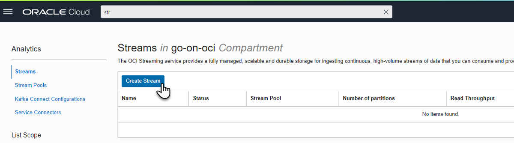
         </picture>

    <p>Provide some details on the stream:</p>

    <ul>
      <li>its name (e.g., <em>go-on-oci-stream</em>)</li>
      <li>the number of partitions (leave at one)</li>
      <li>the retention time (24 hours should be fine for our purposes)</li>
    </ul>

    <blockquote class="alert">
      <p><strong>NOTE:</strong> Leave the radio button selected for <em>Auto-Create a Default Stream Pool</em>.</p>
    </blockquote>

    <picture class="aligncenter">
             <source srcset="assets/way-to-go-on-oci-article-5-create-stream1.png 1x" />
             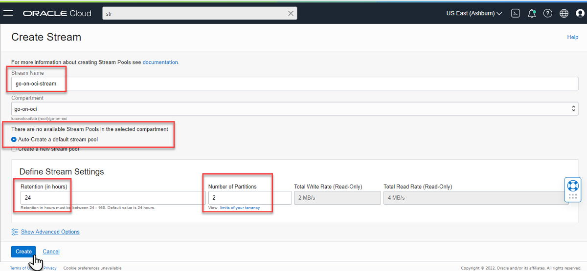
         </picture>
  </li>
  <li>
    <p>Select <strong>Create Stream</strong>.</p>

    <p>At this point, the Stream will be created and should take only a few seconds to complete.</p>

    <picture class="aligncenter">
             <source srcset="assets/way-to-go-on-oci-article-5-streamcreated.png 1x" />
             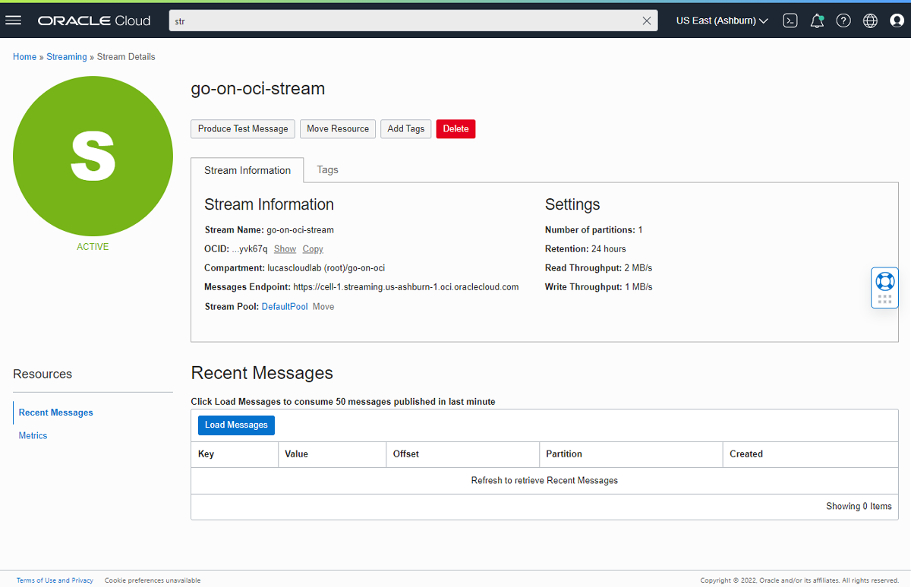
         </picture>
  </li>
</ol>

<h3 id="try-out-the-new-stream">Try out the new Stream</h3>

<p>Once the Stream has been created and is active:</p>

<ol>
  <li>Select <strong>Produce Test Message</strong>.</li>
  <li>
    <p>Enter a message and select <strong>Produce</strong>.</p>

    <picture class="aligncenter">
             <source srcset="assets/way-to-go-on-oci-article-5-producemessage.png 1x" />
             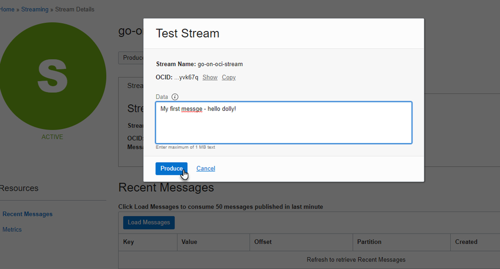
         </picture>

    <p>The console will indicate that the message was produced successfully.</p>
  </li>
  <li>
    <p>Select the <strong>Cancel</strong> link to close the popup window.</p>
  </li>
  <li>
    <p>Select <strong>Load Messages</strong>.</p>

    <p>All recently published messages (within the last 60 seconds) on the Stream are displayed. You should see the test message that you just published.</p>

    <picture class="aligncenter">
             <source srcset="assets/way-to-go-on-oci-article-5-loadmessages.png 1x" />
             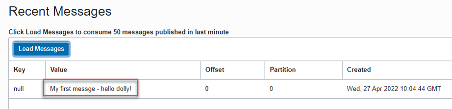
         </picture>
  </li>
</ol>

<h3 id="go-message-producer">Go Message Producer</h3>

<h4 id="go-client">Go client</h4>

<p>The file, <code class="language-plaintext highlighter-rouge">producer.go</code> is a Go client for a Stream on OCI. It is located within <code class="language-plaintext highlighter-rouge">applications/message-producer</code> in the source code repository of this article series. This file assumes a local <code class="language-plaintext highlighter-rouge">$HOME/.oci/config</code> file that provides details for connecting to OCI as a user with permissions on the stream. When the client is first launched, <code class="language-plaintext highlighter-rouge">StreamClient</code> is initialized and the function <strong>PutMessages</strong> is invoked with a request targeted at the <code class="language-plaintext highlighter-rouge">streamOCID</code> for the new stream that contains two messages.</p>

<p>The code is quite straightforward:</p>

<div class="language-go highlighter-rouge"><div class="highlight"><pre class="highlight"><code><span class="k">package</span> <span class="n">main</span>

<span class="k">import</span> <span class="p">(</span>
 <span class="s">"github.com/oracle/oci-go-sdk/v65/common"</span>
 <span class="s">"github.com/oracle/oci-go-sdk/v65/streaming"</span>
<span class="p">)</span>

<span class="k">const</span> <span class="p">(</span>
 <span class="n">streamMessagesEndpoint</span> <span class="o">=</span> <span class="s">"&lt;the messages endpoint for the stream&gt;"</span>
 <span class="n">streamOCID</span>             <span class="o">=</span> <span class="s">"&lt;the OCID of the stream&gt;"</span>
<span class="p">)</span>

<span class="k">func</span> <span class="n">main</span><span class="p">()</span> <span class="p">{</span>
 <span class="n">streamClient</span><span class="p">,</span> <span class="n">_</span> <span class="o">:=</span> <span class="n">streaming</span><span class="o">.</span><span class="n">NewStreamClientWithConfigurationProvider</span><span class="p">(</span><span class="n">common</span><span class="o">.</span><span class="n">DefaultConfigProvider</span><span class="p">(),</span> <span class="n">streamMessagesEndpoint</span><span class="p">)</span>
 <span class="n">putMsgReq</span> <span class="o">:=</span> <span class="n">streaming</span><span class="o">.</span><span class="n">PutMessagesRequest</span><span class="p">{</span><span class="n">StreamId</span><span class="o">:</span> <span class="n">common</span><span class="o">.</span><span class="n">String</span><span class="p">(</span><span class="n">streamOCID</span><span class="p">),</span>
    <span class="n">PutMessagesDetails</span><span class="o">:</span> <span class="n">streaming</span><span class="o">.</span><span class="n">PutMessagesDetails</span><span class="p">{</span>
     <span class="c">// two messages are put on the Stream in the single request </span>
     <span class="n">Messages</span><span class="o">:</span> <span class="p">[]</span><span class="n">streaming</span><span class="o">.</span><span class="n">PutMessagesDetailsEntry</span><span class="p">{</span>
      <span class="p">{</span><span class="n">Key</span><span class="o">:</span> <span class="p">[]</span><span class="kt">byte</span><span class="p">(</span><span class="s">"key dummy-0"</span> <span class="p">),</span> <span class="n">Value</span><span class="o">:</span> <span class="p">[]</span><span class="kt">byte</span><span class="p">(</span><span class="s">"my happy message-"</span><span class="p">)},</span>
      <span class="p">{</span><span class="n">Key</span><span class="o">:</span> <span class="p">[]</span><span class="kt">byte</span><span class="p">(</span><span class="s">"key dummy-1-"</span><span class="p">),</span> <span class="n">Value</span><span class="o">:</span> <span class="p">[]</span><span class="kt">byte</span><span class="p">(</span><span class="s">"hello dolly and others-"</span><span class="p">)}}},</span>
  <span class="p">}</span>
 <span class="n">streamClient</span><span class="o">.</span><span class="n">PutMessages</span><span class="p">(</span><span class="n">context</span><span class="o">.</span><span class="n">Background</span><span class="p">(),</span> <span class="n">putMsgReq</span><span class="p">)</span>
<span class="p">}</span>
</code></pre></div></div>

<h4 id="running-the-client">Running the client</h4>

<p>Before you’re able to run <code class="language-plaintext highlighter-rouge">producer.go</code>, you’ll first need to:</p>

<ol>
  <li>Set the appropriate values for <code class="language-plaintext highlighter-rouge">streamOCID</code> and <code class="language-plaintext highlighter-rouge">streamMessagesEndpoint</code>.</li>
  <li>In the directory that contains <code class="language-plaintext highlighter-rouge">producer.go</code>, run <code class="language-plaintext highlighter-rouge">go mod tidy</code> on the command line.</li>
</ol>

<p>With that set, you’re all ready to run the client.</p>

<ol>
  <li>Execute <code class="language-plaintext highlighter-rouge">go run producer.go</code>.</li>
  <li>
    <p>Use the OCI Streaming console to inspect the arrival of messages and select <strong>Load Messages</strong>.</p>

    <p>In the console, you’ll see the messages produced by the Go application. At this point, feel free to change the content/number of messages produced, or run the producer again and check again for the messages in the console.</p>

    <picture class="aligncenter">
             <source srcset="assets/way-to-go-on-oci-article-5-messages-published-by-producer.png 1x" />
             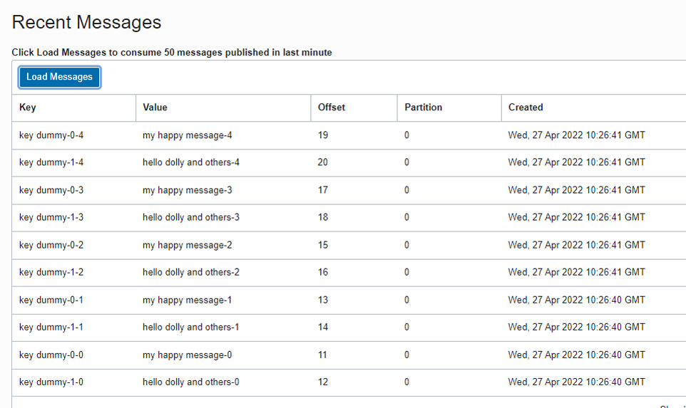
         </picture>
  </li>
</ol>

<h3 id="consume-messages-from-a-stream-in-a-go-application">Consume Messages from a Stream in a Go application</h3>

<p>Really, a Stream isn’t much use to us if we’re just able to send messages to it. In order for the process to be really useful, messages need to be <em>consumed</em> before they expire.</p>

<p>The next application that we’ll discuss does exactly this. You can find it in the <code class="language-plaintext highlighter-rouge">applications\message-consumer</code> directory of the source code repository.</p>

<p>So, how does it work its magic? First, it creates a client for OCI Streaming using the Go SDK for OCI from Go code. Then it makes a <em>cursor request</em>. A <em>cursor</em> is pointer to a location in a stream and represents a specific consumer. The application uses the cursor to make requests for messages. If more messages are available on the stream beyond the current cursor’s offset, then the next batch of messages is delivered (and the offset is moved). When all messages have been retrieved through the cursor, the request will result in a response without any messages. From there, the client can continue polling (with) the cursor for new messages on the stream.</p>

<h3 id="running-the-application">Running the application</h3>

<p>First, run <code class="language-plaintext highlighter-rouge">go mod tidy</code> at the command line. Then, run this application using <code class="language-plaintext highlighter-rouge">go run consumer.go</code>.</p>

<div class="language-go highlighter-rouge"><div class="highlight"><pre class="highlight"><code><span class="k">package</span> <span class="n">main</span>

<span class="k">import</span> <span class="p">(</span>
 <span class="s">"context"</span>
 <span class="s">"fmt"</span>

 <span class="s">"github.com/oracle/oci-go-sdk/v65/common"</span>
 <span class="s">"github.com/oracle/oci-go-sdk/v65/streaming"</span>
<span class="p">)</span>

<span class="k">const</span> <span class="p">(</span>
 <span class="n">streamMessagesEndpoint</span> <span class="o">=</span> <span class="s">"https://cell-1.streaming.us-ashburn-1.oci.oraclecloud.com"</span>
 <span class="n">streamOCID</span>             <span class="o">=</span> <span class="s">"ocid1.stream.oc1.iad.amaaaaaa6sde7caa56brreqvzptc37wytom7pjk7vx3qaflagk2t3syvk67q"</span>
<span class="p">)</span>

<span class="k">func</span> <span class="n">main</span><span class="p">()</span> <span class="p">{</span>
 <span class="n">streamClient</span><span class="p">,</span> <span class="n">_</span> <span class="o">:=</span> <span class="n">streaming</span><span class="o">.</span><span class="n">NewStreamClientWithConfigurationProvider</span><span class="p">(</span><span class="n">common</span><span class="o">.</span><span class="n">DefaultConfigProvider</span><span class="p">(),</span> <span class="n">streamMessagesEndpoint</span><span class="p">)</span>
 <span class="n">partition</span> <span class="o">:=</span> <span class="s">"0"</span> 
 <span class="n">createCursorRequest</span> <span class="o">:=</span> <span class="n">streaming</span><span class="o">.</span><span class="n">CreateCursorRequest</span><span class="p">{</span>
  <span class="n">StreamId</span><span class="o">:</span> <span class="n">common</span><span class="o">.</span><span class="n">String</span><span class="p">(</span><span class="n">streamOCID</span><span class="p">),</span>
  <span class="n">CreateCursorDetails</span><span class="o">:</span> <span class="n">streaming</span><span class="o">.</span><span class="n">CreateCursorDetails</span><span class="p">{</span><span class="n">Type</span><span class="o">:</span> <span class="n">streaming</span><span class="o">.</span><span class="n">CreateCursorDetailsTypeTrimHorizon</span><span class="p">,</span>
    <span class="n">Partition</span><span class="o">:</span> <span class="o">&amp;</span><span class="n">partition</span><span class="p">,</span> <span class="c">// mandatory: which partition to read from; note: with a GroupCursor, OCI Streaming assigns partitions to consumers (represented by cursors)</span>
  <span class="p">}}</span>
 <span class="n">createCursorResponse</span><span class="p">,</span> <span class="n">_</span> <span class="o">:=</span> <span class="n">streamClient</span><span class="o">.</span><span class="n">CreateCursor</span><span class="p">(</span><span class="n">context</span><span class="o">.</span><span class="n">Background</span><span class="p">(),</span> <span class="n">createCursorRequest</span><span class="p">)</span>
  <span class="c">// using the cursor, go retrieve messages </span>
 <span class="n">consumeMessagesLoop</span><span class="p">(</span><span class="n">streamClient</span><span class="p">,</span> <span class="n">streamOCID</span><span class="p">,</span> <span class="o">*</span><span class="n">createCursorResponse</span><span class="o">.</span><span class="n">Value</span><span class="p">)</span>
<span class="p">}</span>

<span class="k">func</span> <span class="n">consumeMessagesLoop</span><span class="p">(</span><span class="n">streamClient</span> <span class="n">streaming</span><span class="o">.</span><span class="n">StreamClient</span><span class="p">,</span> <span class="n">streamOcid</span> <span class="kt">string</span><span class="p">,</span> <span class="n">cursorValue</span> <span class="kt">string</span><span class="p">)</span> <span class="p">{</span>
 <span class="n">getMessagesFromCursorRequest</span> <span class="o">:=</span> <span class="n">streaming</span><span class="o">.</span><span class="n">GetMessagesRequest</span><span class="p">{</span><span class="n">Limit</span><span class="o">:</span> <span class="n">common</span><span class="o">.</span><span class="n">Int</span><span class="p">(</span><span class="m">5</span><span class="p">),</span> <span class="c">// optional: how many messages to collect in one request</span>
  <span class="n">StreamId</span><span class="o">:</span> <span class="n">common</span><span class="o">.</span><span class="n">String</span><span class="p">(</span><span class="n">streamOcid</span><span class="p">),</span>
  <span class="n">Cursor</span><span class="o">:</span>   <span class="n">common</span><span class="o">.</span><span class="n">String</span><span class="p">(</span><span class="n">cursorValue</span><span class="p">)}</span>
 <span class="k">for</span> <span class="n">i</span> <span class="o">:=</span> <span class="m">0</span><span class="p">;</span> <span class="n">i</span> <span class="o">&lt;</span> <span class="m">15</span><span class="p">;</span> <span class="n">i</span><span class="o">++</span> <span class="p">{</span>
     <span class="c">// fetch a next batch of maximum Limit (==5) messages</span>
  <span class="n">getMessagesFromCursorRequest</span><span class="o">.</span><span class="n">Cursor</span> <span class="o">=</span> <span class="n">common</span><span class="o">.</span><span class="n">String</span><span class="p">(</span><span class="n">cursorValue</span><span class="p">)</span>
  <span class="c">// (Try to) fetch new messages from the cursor (starting from just after the offset of the previous call)</span>
  <span class="n">getMessagesFromCursorResponse</span><span class="p">,</span> <span class="n">_</span> <span class="o">:=</span> <span class="n">streamClient</span><span class="o">.</span><span class="n">GetMessages</span><span class="p">(</span><span class="n">context</span><span class="o">.</span><span class="n">Background</span><span class="p">(),</span> <span class="n">getMessagesFromCursorRequest</span><span class="p">)</span>
  <span class="k">for</span> <span class="n">_</span><span class="p">,</span> <span class="n">message</span> <span class="o">:=</span> <span class="k">range</span> <span class="n">getMessagesFromCursorResponse</span><span class="o">.</span><span class="n">Items</span> <span class="p">{</span>
    <span class="n">fmt</span><span class="o">.</span><span class="n">Println</span><span class="p">(</span><span class="s">"Key : "</span> <span class="o">+</span> <span class="kt">string</span><span class="p">(</span><span class="n">message</span><span class="o">.</span><span class="n">Key</span><span class="p">)</span> <span class="o">+</span> <span class="s">", value : "</span> <span class="o">+</span> <span class="kt">string</span><span class="p">(</span><span class="n">message</span><span class="o">.</span><span class="n">Value</span><span class="p">)</span> <span class="o">+</span> <span class="s">", Partition "</span> <span class="o">+</span> <span class="o">*</span><span class="n">message</span><span class="o">.</span><span class="n">Partition</span><span class="p">)</span>
  <span class="p">}</span>
  <span class="n">cursorValue</span> <span class="o">=</span> <span class="o">*</span><span class="n">getMessagesFromCursorResponse</span><span class="o">.</span><span class="n">OpcNextCursor</span>
 <span class="p">}</span>
<span class="p">}</span>
</code></pre></div></div>

<p><strong>Sample output:</strong>
Depending on what messages have been produced to the topic (and are still retained), the output will look similar to:</p>

<div class="language-console highlighter-rouge"><div class="highlight"><pre class="highlight"><code><span class="go">starting iteration  0
Key : , value : My first messge - hello dolly!, Partition 0
Key : key dummy-0-0, value : value dummy-0, Partition 0
Key : key dummy-1-0, value : value dummy-0, Partition 0
Key : key dummy-0-1, value : value dummy-1, Partition 0
Key : key dummy-1-1, value : value dummy-1, Partition 0
starting iteration  1
Key : key dummy-0-2, value : value dummy-2, Partition 0
Key : key dummy-1-2, value : value dummy-2, Partition 0
</span></code></pre></div></div>

<h3 id="types">Types</h3>

<p>Multiple values for <em>Type</em> can be defined to specify where the cursor should start fetching message from the Stream:</p>

<ul>
  <li><code class="language-plaintext highlighter-rouge">AFTER_OFFSET:</code> The partition position immediately following the offset you specify. (Offsets are assigned when you successfully append a message to a partition in a stream.)</li>
  <li><code class="language-plaintext highlighter-rouge">AT_OFFSET:</code> The exact partition position indicated by the offset you specify.</li>
  <li><code class="language-plaintext highlighter-rouge">AT_TIME:</code> A specific point in time.</li>
  <li><code class="language-plaintext highlighter-rouge">LATEST:</code> The most recent message in the partition that was added after the cursor was created.</li>
  <li><code class="language-plaintext highlighter-rouge">TRIM_HORIZON:</code> The oldest message in the partition that is within the retention period window.</li>
</ul>

<blockquote class="warn">
  <p><strong>NOTE:</strong> When <code class="language-plaintext highlighter-rouge">AFTER_OFFSET</code> or <code class="language-plaintext highlighter-rouge">AT_OFFSET</code> are defined, the value for offset <strong>must</strong> be provided. When <code class="language-plaintext highlighter-rouge">AT_TIME</code> is set as type, a value for time is mandatory.</p>
</blockquote>

<p><strong>Example -</strong> Where message retrieval should start after offset 5:</p>

<div class="language-go highlighter-rouge"><div class="highlight"><pre class="highlight"><code> <span class="n">partition</span> <span class="o">:=</span> <span class="s">"0"</span>
 <span class="n">offset</span> <span class="o">:=</span> <span class="n">common</span><span class="o">.</span><span class="n">Int64</span><span class="p">(</span><span class="m">5</span><span class="p">)</span>
 <span class="n">createCursorRequest</span> <span class="o">:=</span> <span class="n">streaming</span><span class="o">.</span><span class="n">CreateCursorRequest</span><span class="p">{</span>
  <span class="n">StreamId</span><span class="o">:</span> <span class="n">common</span><span class="o">.</span><span class="n">String</span><span class="p">(</span><span class="n">streamOCID</span><span class="p">),</span>
  <span class="n">CreateCursorDetails</span><span class="o">:</span> <span class="n">streaming</span><span class="o">.</span><span class="n">CreateCursorDetails</span><span class="p">{</span><span class="n">Type</span><span class="o">:</span> <span class="n">streaming</span><span class="o">.</span><span class="n">CreateCursorDetailsTypeAfterOffset</span><span class="p">,</span>
    <span class="n">Offset</span><span class="o">:</span>    <span class="o">&amp;</span><span class="n">offset</span><span class="p">,</span>
    <span class="n">Partition</span><span class="o">:</span> <span class="o">&amp;</span><span class="n">partition</span><span class="p">,</span>
  <span class="p">}}</span>
</code></pre></div></div>

<h4 id="consumer-groups">Consumer groups</h4>

<p>Effectively, each consumer is represented by an active cursor. This means that instead of explicitly defining individual, isolated cursors that link up with a specific partition, we can use the concept of <em>consumer groups</em> and leave it to the Streaming Service to associate partitions with specific consumers. In that case, the body of function <code class="language-plaintext highlighter-rouge">main</code> becomes:</p>

<div class="language-go highlighter-rouge"><div class="highlight"><pre class="highlight"><code><span class="k">func</span> <span class="n">main</span><span class="p">()</span> <span class="p">{</span>
 <span class="n">streamClient</span><span class="p">,</span> <span class="n">_</span> <span class="o">:=</span> <span class="n">streaming</span><span class="o">.</span><span class="n">NewStreamClientWithConfigurationProvider</span><span class="p">(</span><span class="n">common</span><span class="o">.</span><span class="n">DefaultConfigProvider</span><span class="p">(),</span> <span class="n">streamMessagesEndpoint</span><span class="p">)</span>
 <span class="c">// Type can be CreateGroupCursorDetailsTypeTrimHorizon, CreateGroupCursorDetailsTypeAtTime, CreateGroupCursorDetailsTypeLatest</span>
 <span class="n">createGroupCursorRequest</span> <span class="o">:=</span> <span class="n">streaming</span><span class="o">.</span><span class="n">CreateGroupCursorRequest</span><span class="p">{</span>
  <span class="n">StreamId</span><span class="o">:</span> <span class="n">common</span><span class="o">.</span><span class="n">String</span><span class="p">(</span><span class="n">streamOCID</span><span class="p">),</span>
  <span class="n">CreateGroupCursorDetails</span><span class="o">:</span> <span class="n">streaming</span><span class="o">.</span><span class="n">CreateGroupCursorDetails</span><span class="p">{</span><span class="n">Type</span><span class="o">:</span> <span class="n">streaming</span><span class="o">.</span><span class="n">CreateGroupCursorDetailsTypeTrimHorizon</span><span class="p">,</span>
    <span class="n">CommitOnGet</span><span class="o">:</span>  <span class="n">common</span><span class="o">.</span><span class="n">Bool</span><span class="p">(</span><span class="no">true</span><span class="p">),</span> <span class="c">// when false, a consumer must manually commit their cursors (to move the offset).</span>
    <span class="n">GroupName</span><span class="o">:</span>    <span class="n">common</span><span class="o">.</span><span class="n">String</span><span class="p">(</span><span class="s">"consumer-group-1"</span><span class="p">),</span>
    <span class="n">InstanceName</span><span class="o">:</span> <span class="n">common</span><span class="o">.</span><span class="n">String</span><span class="p">(</span><span class="s">"go-instance-1"</span><span class="p">),</span> <span class="c">// A unique identifier for the instance joining the consumer group. If an instanceName is not provided, a UUID will be generated</span>
    <span class="n">TimeoutInMs</span><span class="o">:</span>  <span class="n">common</span><span class="o">.</span><span class="n">Int</span><span class="p">(</span><span class="m">1000</span><span class="p">),</span>
  <span class="p">}}</span>
 <span class="n">createGroupCursorResponse</span><span class="p">,</span> <span class="n">_</span> <span class="o">:=</span> <span class="n">streamClient</span><span class="o">.</span><span class="n">CreateGroupCursor</span><span class="p">(</span><span class="n">context</span><span class="o">.</span><span class="n">Background</span><span class="p">(),</span> <span class="n">createGroupCursorRequest</span><span class="p">)</span>
 <span class="n">consumeMessagesLoop</span><span class="p">(</span><span class="n">streamClient</span><span class="p">,</span> <span class="n">streamOCID</span><span class="p">,</span> <span class="o">*</span><span class="n">createGroupCursorResponse</span><span class="o">.</span><span class="n">Value</span><span class="p">)</span>
<span class="p">}</span>
</code></pre></div></div>

<p>As long as there is only a single instance in the group, all messages on all partitions are handed to this consumer’s cursor. When multiple instances are added to the group, they will each get one or more partitions assigned to them (if enough partitions are available for the stream) and receive messages from those partitions. Multiple consumers can work in parallel on processing the messages on the stream without any message being processed more than once.</p>

<h2 id="create-an-oci-vault-and-store-secrets">Create an OCI Vault and Store Secrets</h2>

<p>It is common for applications to use configuration settings as part of their operation. These settings can help determine part of the behavior of the application, instructing it on how to deal with endpoints, file system locations, or credentials for making connections. Not unsurprisingly, configuration settings can also be environment dependent. For instance, the same application in a test environment uses different values than it would in the production environment. And as you might imagine, some of the configuration settings are sensitive, such as passwords or private keys.</p>

<p>So far, the Go applications discussed in this series haven’t worked explicitly with configuration settings. For example purposes, some applications contain hard-coded references to compartment, bucket, and stream, or are committed to the code repository with a database wallet and hard-coded database connection details. This certainly isn’t ideal, and in practice you’ll want to avoid doing the same for your own applications.</p>

<h3 id="vaults">Vaults</h3>

<p>From this point on, we’ll improve our way of working and use OCI Vault instead. The Vault service on OCI lets you create vaults in your tenancy as containers for encryption keys and secrets. Vaults are logical entities where the Vault service creates and durably stores keys and secrets. The type of vault you choose  determines features and functionality such as degrees of storage isolation, access to management and encryption, and scalability.</p>

<p>If needed, a <em>virtual private vault</em> provides you with a dedicated partition in a <em>hardware security module</em> (HSM), offering a level of storage isolation for encryption keys that’s effectively equivalent to a virtual independent HSM. Keys are stored on highly available and durable HSMs that meet Federal Information Processing Standards (FIPS) 140-2 Security Level 3 security certification. The Vault service uses the Advanced Encryption Standard (AES) as its encryption algorithm and uses AES symmetric keys. Note that the virtual private vault is a paid service whereas the default vault is always free.</p>

<p>Keys are logical entities that represent one or more key versions that contain the cryptographic material used to encrypt and decrypt data, protecting the data where it’s stored. When processed as part of an encryption algorithm, a key specifies how to transform plaintext into ciphertext during encryption and how to transform ciphertext into plaintext during decryption. Plain text in this sense can either be a base64 representation of binary content or a JSON document that contain many configuration settings in a single key.</p>

<p>Vaults are first and foremost associated with secrets that contain sensitive information. However, even information that may not be very sensitive can be stored in a key. This means that an application can use keys as configuration settings during deployment or at runtime to help define the environment-specific settings and behavior. And a reference to the Vault Secret is all that the application needs to retrieve the <em>secret</em> that provides the required settings. What this means is that secrets can now be managed independently from an application. You can avoid using hard coding that runs contrary to standard best practices and makes it impossible to use a single code base for all environments.</p>
<blockquote class="alert">
  <p><strong>NOTE:</strong> It’s important to keep in mind that when the value of secret changes and you want the application to start using the new values, you have to make sure to reinitialize the application using the changed values.</p>
</blockquote>

<h3 id="create-an-oci-vault">Create an OCI Vault</h3>

<p>In this section, we’ll create a Vault and a simple secret that we can read from a Go application. Next, we’ll create a secret that contains an Oracle Wallet and then a second secret through a JSON document that contains additional database connection details. Using this secret, we can create an application that works with an Oracle Database and which learns at runtime how to connect to the database when it accesses the secret. All you need to connect to a different database is change the secret and then restart the application. That’s it!</p>

<p>Let’s create the vault.</p>

<ol>
  <li>
    <table>
      <tbody>
        <tr>
          <td>In the OCI console, enter <strong>vau</strong> in the search field and then select the link **Vault</td>
          <td>Identity &amp; Security**.</td>
        </tr>
      </tbody>
    </table>

    <p>The overview page with all of vaults in the current compartment is shown, most likely without any entries.</p>
  </li>
  <li>
    <p>Select <strong>Create Vault</strong> and in the <strong>Create Vault</strong> form enter the name for the new vault: <strong>go-on-oci-vault</strong>.</p>

    <p>The new vault doesn’t have to be a <em>Virtual Private Vault</em>, so leave the checkbox unchecked.</p>
  </li>
  <li>
    <p>Select the <strong>Create Vault</strong> button to create the vault.</p>

    <picture class="aligncenter">
             <source srcset="assets/way-to-go-on-oci-article-5-createvault.png 1x" />
             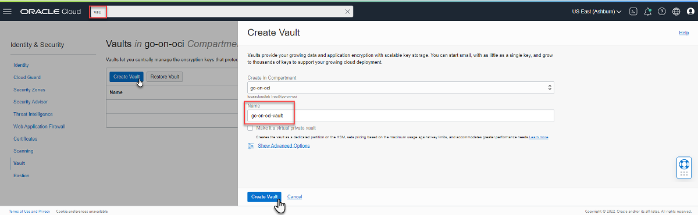
         </picture>

    <p>A list of vaults is returned. This time though, it’ll contain your new vault with the status <em>creating</em>.</p>
    <blockquote class="notice">
      <p><strong>NOTE:</strong> It can take up to one minute or so for the vault to be initialized.</p>
    </blockquote>
  </li>
  <li>When the new vault’s status is <em>Active</em>, select the name of your new vault and then navigate to its details page.</li>
  <li>Create the <em>master encryption key</em> for the vault.  We’ll need to do this before we can start creating secrets in it.
    <ol>
      <li>Enter the name for the master key (e.g., <em>go-on-oci-vault-master-key</em>).</li>
      <li>Accept all default values.</li>
      <li>
        <p>Select <strong>Create Key</strong>.</p>

        <p>It’ll take a little time for this new master key to be produced.</p>

        <picture class="aligncenter">
         <source srcset="assets/way-to-go-on-oci-article-5-createmasterkey.png 1x" />
         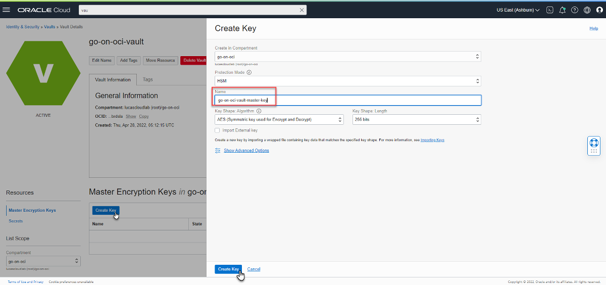
     </picture>
      </li>
    </ol>
  </li>
</ol>

<h3 id="create-a-secret">Create a Secret</h3>

<p>We now have a vault and a master key to encrypt any secrets we’ll want to store. At this point, we’re ready to define secrets in the vault.</p>

<p>Let’s start with a very simple one.</p>

<ol>
  <li>
    <p>Select the link for the <strong>Secrets</strong> and select <strong>Create Secret</strong>.</p>

    <p>A page is presented where a new secret can be created.</p>
  </li>
  <li>Enter the name for the secret (e.g., <em>greeting-of-the-day</em>).</li>
  <li>Select the master key we set up for the vault in the previous section and leave the selection list <strong>Secret Type Template</strong> at <em>Plain Text</em>.</li>
  <li>Enter the value of the secret greeting (e.g., <em>Have a wonderful day!</em>).</li>
  <li>
    <p>Select <strong>Create Secret</strong> to save the new secret to the store.</p>

    <p>This is the start of what’s commonly referred to as a <em>secret bundle</em>. A secret bundle consists of the secret contents, properties of the secret and secret version (such as version number or rotation state), and user-provided contextual metadata for the secret. When you rotate a secret, you provide new secret contents to the Vault service to generate a new secret version. The complete version history of all values that have been assigned to the secret will be retained.</p>

    <picture class="aligncenter">
             <source srcset="assets/way-to-go-on-oci-article-5-createsecretgreeting.png 1x" />
             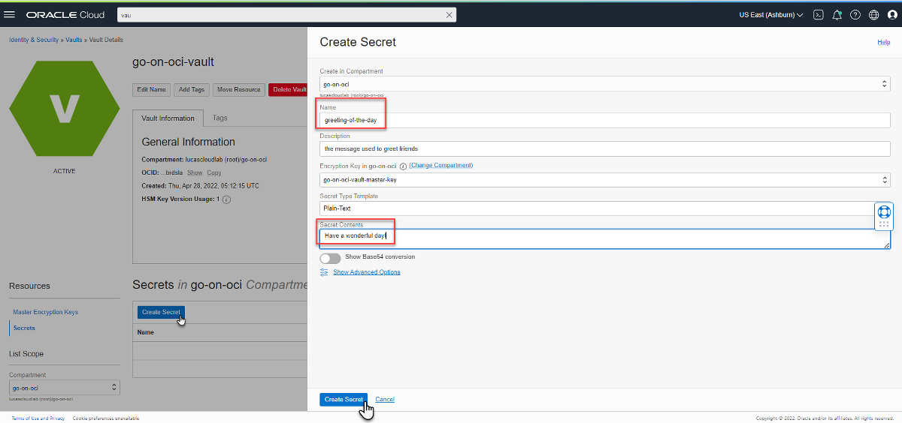
         </picture>
  </li>
</ol>

<h3 id="read-secret-from-go-application">Read Secret from Go application</h3>

<p>The secret that you just defined is now required in our Go application. Let’s see how we can use the application to access the values of secrets.</p>

<p>Probably the most straightforward example of how to retrieve a secret from an OCI Vault from Go lives in the file <code class="language-plaintext highlighter-rouge">secret-reader.go</code> (located in <code class="language-plaintext highlighter-rouge">applications/secret-reader</code> of the source code repository). It uses the Go SDK for OCI and the only piece of information it really needs (outside of the <code class="language-plaintext highlighter-rouge">$HOME/.oci/config</code> file) is the OCID for the secret to be retrieved.</p>

<blockquote class="alert">
  <p><strong>NOTE:</strong> The assumption here is that whichever user’s credentials are defined in the config file also has read permissions for the secret.</p>
</blockquote>

<p>In the code below, make sure to replace <code class="language-plaintext highlighter-rouge">secretOCID</code> with the appropriate OCID value.</p>

<div class="language-go highlighter-rouge"><div class="highlight"><pre class="highlight"><code><span class="k">package</span> <span class="n">main</span>

<span class="k">import</span> <span class="p">(</span>
 <span class="s">"context"</span>
 <span class="n">b64</span> <span class="s">"encoding/base64"</span>
 <span class="s">"fmt"</span>

 <span class="s">"github.com/oracle/oci-go-sdk/v65/common"</span>
 <span class="s">"github.com/oracle/oci-go-sdk/v65/secrets"</span>
<span class="p">)</span>

<span class="k">const</span> <span class="p">(</span>
 <span class="n">secretOCID</span> <span class="o">=</span> <span class="s">"&lt;OCID of the Secret to be Read from a Vault&gt;"</span>
<span class="p">)</span>

<span class="k">func</span> <span class="n">main</span><span class="p">()</span> <span class="p">{</span>
 <span class="n">secretsClient</span><span class="p">,</span> <span class="n">_</span> <span class="o">:=</span> <span class="n">secrets</span><span class="o">.</span><span class="n">NewSecretsClientWithConfigurationProvider</span><span class="p">(</span><span class="n">common</span><span class="o">.</span><span class="n">DefaultConfigProvider</span><span class="p">())</span>
 <span class="n">secretReq</span> <span class="o">:=</span> <span class="n">secrets</span><span class="o">.</span><span class="n">GetSecretBundleRequest</span><span class="p">{</span><span class="n">SecretId</span><span class="o">:</span> <span class="n">common</span><span class="o">.</span><span class="n">String</span><span class="p">(</span><span class="n">secretOCID</span><span class="p">)}</span>
 <span class="n">secretResponse</span><span class="p">,</span> <span class="n">_</span> <span class="o">:=</span> <span class="n">secretsClient</span><span class="o">.</span><span class="n">GetSecretBundle</span><span class="p">(</span><span class="n">context</span><span class="o">.</span><span class="n">Background</span><span class="p">(),</span> <span class="n">secretReq</span><span class="p">)</span>
 <span class="n">contentDetails</span> <span class="o">:=</span> <span class="n">secretResponse</span><span class="o">.</span><span class="n">SecretBundleContent</span><span class="o">.</span><span class="p">(</span><span class="n">secrets</span><span class="o">.</span><span class="n">Base64SecretBundleContentDetails</span><span class="p">)</span>
 <span class="n">decodedSecretContents</span><span class="p">,</span> <span class="n">_</span> <span class="o">:=</span> <span class="n">b64</span><span class="o">.</span><span class="n">StdEncoding</span><span class="o">.</span><span class="n">DecodeString</span><span class="p">(</span><span class="o">*</span><span class="n">contentDetails</span><span class="o">.</span><span class="n">Content</span><span class="p">)</span>
 <span class="n">fmt</span><span class="o">.</span><span class="n">Println</span><span class="p">(</span><span class="s">"Secret Contents:"</span><span class="p">,</span> <span class="kt">string</span><span class="p">(</span><span class="n">decodedSecretContents</span><span class="p">))</span>
<span class="p">}</span>
</code></pre></div></div>

<h4 id="run-the-application">Run the application</h4>

<p>To run the application, execute <code class="language-plaintext highlighter-rouge">go run secret-reader.go</code> at the command line.  This should echo the content of the secret that you just created to the command line.</p>

<p>To see the effect of managing configuration settings separate from the application source code, update the secret in the OCI Console and run the application again. You should now see the changed content since the application will always retrieve the latest version of the secret.</p>

<p>So, let’s review. Not only does the code not contain the highly sensitive value of the secret, it also remains unchanged until the application has been restarted.</p>

<p>In a broader context, refreshing updated values of configuration settings in live applications is an interesting and relevant topic, but one we’ll leave for another moment.</p>

<p>In the next section, we’ll explore how to create secrets that actually contain sensitive information.</p>

<h3 id="store-oracle-database-connection-details-and-wallet-in-vault">Store Oracle Database connection details and Wallet in Vault</h3>

<p>In the <a href="way-to-go-on-oci-article4.md">previous article</a>, details about the database connection and the Oracle Wallet Information were hard coded into our source code and left completely exposed in our repository. In a real environment, that would be inexcusable.</p>

<p>The proper way to handle such sensitive data would be using a vault. When an application runs it knows it has to connect to a database, but unless we tell it, it doesn’t know where that database is or which credentials it needs to connect with. That particular information can be retrieved from the vault provided that:</p>

<ul>
  <li>we use the secret identifiers</li>
  <li>the application is running as a user or on a host that has permissions for reading the content of these secrets.</li>
</ul>

<h4 id="create-secret">Create secret</h4>

<p>Storing the database connection details (e.g., the <code class="language-plaintext highlighter-rouge">autonomousDB</code> <em>struct</em> in the file <em>data-service.go</em> in application <em>data-service</em> discussed in the previous article) in a secret isn’t difficult at all.</p>

<ol>
  <li>
    <p>Create a JSON-formatted string from the data in the struct:</p>

    <div class="language-json highlighter-rouge"><div class="highlight"><pre class="highlight"><code><span class="w"> </span><span class="p">{</span><span class="w"> </span><span class="nl">"service"</span><span class="p">:</span><span class="w">        </span><span class="s2">"k8j2fvxbaujdcfy_goonocidb_medium.adb.oraclecloud.com"</span><span class="p">,</span><span class="w">
   </span><span class="nl">"username"</span><span class="p">:</span><span class="w">       </span><span class="s2">"demo"</span><span class="p">,</span><span class="w">
   </span><span class="nl">"server"</span><span class="p">:</span><span class="w">         </span><span class="s2">"adb.us-ashburn-1.oraclecloud.com"</span><span class="p">,</span><span class="w">
   </span><span class="nl">"port"</span><span class="p">:</span><span class="w">           </span><span class="s2">"1522"</span><span class="p">,</span><span class="w">
   </span><span class="nl">"password"</span><span class="p">:</span><span class="w">       </span><span class="s2">"thePassword1"</span><span class="w">
 </span><span class="p">}</span><span class="w">
</span></code></pre></div>    </div>
  </li>
  <li>Navigate to the vault page for <em>go-on-oc-vault</em> in the OCI console.</li>
  <li>In the <strong>Secrets</strong> tab, select <strong>Create Secret</strong> and enter the name for the secret: <em>autonomousDB-demo-credentials</em>.</li>
  <li>Select the <strong>master encryption key</strong>.</li>
  <li>
    <p>In the <strong>Secret Contents</strong> area, copy and paste the JSON content containing the database connection details from step 1 above.</p>

    <blockquote class="alert">
      <p><strong>NOTE:</strong> Make sure to keep the type template on <em>Plain-Text</em>.</p>
    </blockquote>
  </li>
  <li>
    <p>Select <strong>Create Secret</strong>.</p>

    <picture class="aligncenter">
             <source srcset="assets/way-to-go-on-oci-article-5-create-secret-autonomousdb-credentials.png 1x" />
             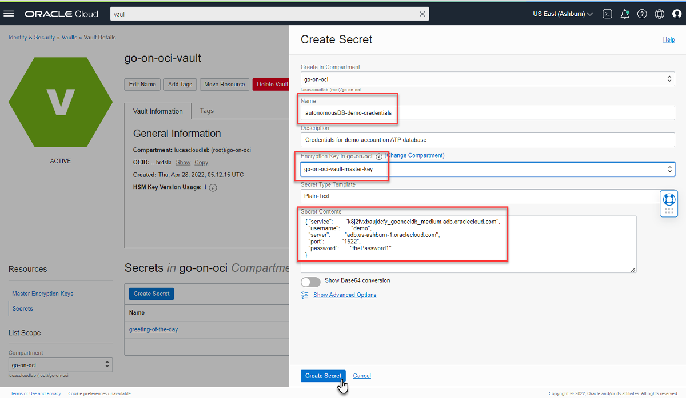
         </picture>
  </li>
</ol>

<h4 id="define-type">Define type</h4>

<p>In the Go application, define a type to hold the database credentials:</p>

<div class="language-go highlighter-rouge"><div class="highlight"><pre class="highlight"><code><span class="k">type</span> <span class="n">DatabaseConnectDetails</span> <span class="k">struct</span> <span class="p">{</span>
 <span class="n">Service</span>        <span class="kt">string</span> <span class="s">`json:service`</span>
 <span class="n">Username</span>       <span class="kt">string</span> <span class="s">`json:username`</span>
 <span class="n">Server</span>         <span class="kt">string</span> <span class="s">`json:server`</span>
 <span class="n">Port</span>           <span class="kt">string</span> <span class="s">`json:port`</span>
 <span class="n">Password</span>       <span class="kt">string</span> <span class="s">`json:password`</span>
 <span class="n">WalletLocation</span> <span class="kt">string</span> <span class="s">`json:walletLocation`</span>
<span class="p">}</span>
</code></pre></div></div>

<h4 id="decode-secret">Decode secret</h4>

<p>Now, create code that decrypts content from the secret and stores it in a variable based on this type:</p>

<div class="language-go highlighter-rouge"><div class="highlight"><pre class="highlight"><code>     <span class="n">secretReq</span> <span class="o">:=</span> <span class="n">secrets</span><span class="o">.</span><span class="n">GetSecretBundleRequest</span><span class="p">{</span><span class="n">SecretId</span><span class="o">:</span> <span class="n">common</span><span class="o">.</span><span class="n">String</span><span class="p">(</span><span class="n">secretOCID</span><span class="p">)}</span>
 <span class="n">secretResponse</span><span class="p">,</span> <span class="n">_</span> <span class="o">:=</span> <span class="n">secretsClient</span><span class="o">.</span><span class="n">GetSecretBundle</span><span class="p">(</span><span class="n">context</span><span class="o">.</span><span class="n">Background</span><span class="p">(),</span> <span class="n">secretReq</span><span class="p">)</span>
 <span class="n">contentDetails</span> <span class="o">:=</span> <span class="n">secretResponse</span><span class="o">.</span><span class="n">SecretBundleContent</span><span class="o">.</span><span class="p">(</span><span class="n">secrets</span><span class="o">.</span><span class="n">Base64SecretBundleContentDetails</span><span class="p">)</span>
     <span class="n">decodedSecretContents</span><span class="p">,</span> <span class="n">_</span> <span class="o">:=</span> <span class="n">b64</span><span class="o">.</span><span class="n">StdEncoding</span><span class="o">.</span><span class="n">DecodeString</span><span class="p">(</span><span class="o">*</span><span class="n">contentDetails</span><span class="o">.</span><span class="n">Content</span><span class="p">)</span>
 <span class="k">var</span> <span class="n">dbCredentials</span> <span class="n">DatabaseConnectDetails</span>
     <span class="n">json</span><span class="o">.</span><span class="n">Unmarshal</span><span class="p">(</span><span class="n">decodedSecretContents</span><span class="p">,</span> <span class="o">&amp;</span><span class="n">dbCredentials</span><span class="p">)</span>
 <span class="n">fmt</span><span class="o">.</span><span class="n">Println</span><span class="p">(</span><span class="s">"database connect details for user: "</span> <span class="o">+</span> <span class="n">dbCredentials</span><span class="o">.</span><span class="n">Username</span><span class="p">)</span>
</code></pre></div></div>

<h4 id="store-the-wallet-file">Store the wallet file</h4>

<p>Next, we need to also store the wallet file <em>cwallet.sso</em> in a secret. Since this file contains binary content, we’ll first need to convert it into a string representation before we can store this information as a secret. All we need to do is encode the content in base64.</p>

<p>We can easily do this on the Linux command line by running:</p>

<div class="language-console highlighter-rouge"><div class="highlight"><pre class="highlight"><code><span class="gp">base64 -i cwallet.sso &gt;</span><span class="w"> </span>cwallet-sso-base64.txt
</code></pre></div></div>

<p>The resulting file, <code class="language-plaintext highlighter-rouge">cwallet-sso-base64.txt</code> contains the content we want to use for the secret.</p>

<p>Now that we have the content in the proper format, let’s save the wallet file.</p>

<ol>
  <li>From the vault page for <em>go-on-oc-vault</em> in the OCI console navigate to the <strong>Secrets</strong> tab and select <strong>Create Secret</strong>.</li>
  <li>Enter the name for the secret: <em>autonomousDB-cwallet-sso</em>.</li>
  <li>
    <p>Select the <strong>master encryption key</strong> and paste the base64 content with database wallet details into the <em>Secret Contents</em>.</p>

    <blockquote class="notice">
      <p><strong>Note:</strong> Make sure to keep the type template set on <em>Base64</em>.</p>
    </blockquote>
  </li>
  <li>
    <p>Select <strong>Create Secret</strong>.</p>

    <picture class="aligncenter">
             <source srcset="assets/way-to-go-on-oci-article-5-createsecret-for-cwallet.png 1x" />
             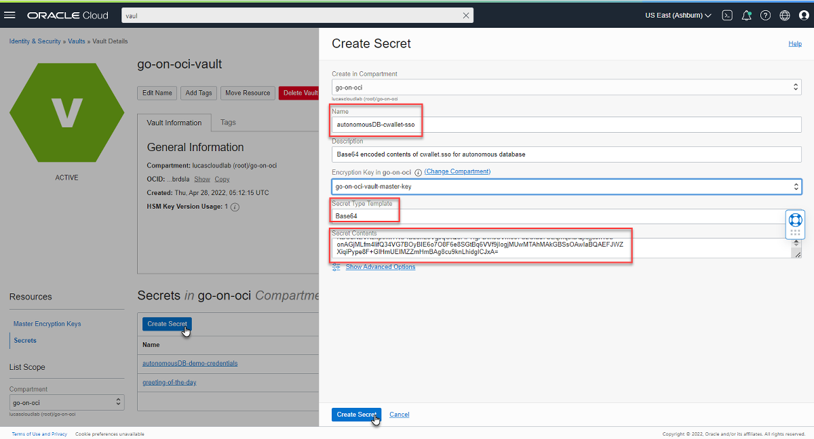
         </picture>
  </li>
</ol>

<h4 id="retrieve-the-wallet-file">Retrieve the wallet file</h4>

<p>The contents of this secret can be retrieved from the Go code in the same way as before. However, this time the application needs to write a local <code class="language-plaintext highlighter-rouge">cwallet.sso</code> file with the contents from the secret:</p>

<div class="language-go highlighter-rouge"><div class="highlight"><pre class="highlight"><code> <span class="n">decodedSecretContents</span><span class="p">,</span> <span class="n">_</span> <span class="o">:=</span> <span class="n">b64</span><span class="o">.</span><span class="n">StdEncoding</span><span class="o">.</span><span class="n">DecodeString</span><span class="p">(</span><span class="o">*</span><span class="n">contentDetails</span><span class="o">.</span><span class="n">Content</span><span class="p">)</span>
 <span class="n">_</span> <span class="o">=</span> <span class="n">os</span><span class="o">.</span><span class="n">WriteFile</span><span class="p">(</span><span class="s">"./cwallet.sso"</span><span class="p">,</span> <span class="n">decodedSecretContents</span><span class="p">,</span> <span class="m">0644</span><span class="p">)</span>
</code></pre></div></div>

<p>This allows the application, using only the OCID values for the two secrets (the database connection details and the database wallet file), to initiate communications with the database it needs to use in its current environment. Just as we promised, nothing hard coded, nothing exposed!</p>

<h3 id="connecting-a-go-application-to-an-oracle-database-using-secrets-from-vault">Connecting a Go application to an Oracle Database using Secrets from Vault</h3>

<p>The code for a simple Oracle Database client can be found in the application Directory (<code class="language-plaintext highlighter-rouge">applications/safe-database-client</code>) of this article’s source-code repository. If you’ve been following along with the series, the client code is very similar to what we discussed in article four’s <code class="language-plaintext highlighter-rouge">applications/go-orcl-db</code>. The main difference here is that this application contains neither a wallet file nor any database connection details. And at this point, you can probably see where this is all going. What the database client does require are references to two OCI Secrets. The first OCID refers to the secret with connection details (in JSON string format) while the second OCID refers to the secret that contains the base64-encoded representation of the <code class="language-plaintext highlighter-rouge">cwallet.sso</code> file.</p>

<h4 id="provide-the-ocids">Provide the OCIDs</h4>

<p>In order to run the <code class="language-plaintext highlighter-rouge">oracle-database-client-app.go</code> application, you’ll need to provide the values for those two OCID references we just mentioned.  These references are contained in the variables: <code class="language-plaintext highlighter-rouge">autonomousDatabaseConnectDetailsSecretOCID</code> (connection details) and <code class="language-plaintext highlighter-rouge">autonomousDatabaseCwalletSsoSecretOCID</code> (wallet file).</p>

<div class="language-go highlighter-rouge"><div class="highlight"><pre class="highlight"><code><span class="k">const</span> <span class="p">(</span>
 <span class="n">autonomousDatabaseConnectDetailsSecretOCID</span> <span class="o">=</span> <span class="s">"ocid1.vaultsecret.oc1.iad.amaaaaaa6sde7caabn37hbdsu7dczk6wpxvr7euq7j5fmti2zkjcpwzlmowq"</span>
 <span class="n">autonomousDatabaseCwalletSsoSecretOCID</span>     <span class="o">=</span> <span class="s">"ocid1.vaultsecret.oc1.iad.amaaaaaa6sde7caazzhfhfsy2v6tqpr3velezxm4r7ld5alifmggjv3le2cq"</span>
<span class="p">)</span>
</code></pre></div></div>

<p>With these values, the application will be able to retrieve the two secrets from the vault. Once retrieved, the wallet file <code class="language-plaintext highlighter-rouge">cwallet.sso</code> is written to the local directory, and the other is used to construct an instance of type <code class="language-plaintext highlighter-rouge">DatabaseConnectDetails</code> that contains login details for the database (username, password, host, port, and service). At this point, the application has all the information it needs to establish a connection to the database. This connection process is the same as the one used by <code class="language-plaintext highlighter-rouge">godror-based-oracle-database-client.go</code>.</p>

<h4 id="run-the-database-client">Run the database client</h4>

<p>You can run the application on the command line with:</p>

<div class="language-console highlighter-rouge"><div class="highlight"><pre class="highlight"><code><span class="go">go run *.go  
</span></code></pre></div></div>

<p>The client will connect to the Autonomous Database and perform some small SQL feats. The nice thing about this example is that the application doesn’t require any information whatsoever about the database it’s going to interact with.</p>

<blockquote class="alert">
  <p><strong>NOTE:</strong> In order to run an application on OCI that needs to read secrets from an OCI Vault, you’ll need to make sure that the following policy applies to the host that runs the code (using either <strong>Resource Principal</strong> or <strong>Instance Principal</strong> authentication):</p>

  <div class="language-console highlighter-rouge"><div class="highlight"><pre class="highlight"><code><span class="go">allow dynamic-group my-secret-group to read secret-family in compartment go-on=oci where target.secret.name = 'my-secret'
</span></code></pre></div>  </div>
</blockquote>

<h2 id="from-streaming-messages-to-new-database-records">From Streaming Messages to new Database Records</h2>

<p>So far, we’ve been working in separate components to achieve what we needed. But, we’re really at the point where we can pull everything together into a single application that doesn’t require any configuration (except for some OCID values for secrets in the OCI vault).</p>

<p>So what should this application be able to do? It will need to subscribe to a Stream in OCI, poll and consume messages, and create records in an Autonomous Database on OCI for every message received from the Stream.</p>

<p>Such an application can be visualized in the following image:</p>

<picture class="aligncenter">
                <source srcset="assets/way-to-go-on-oci-article-5-endtoend-readsecrets-consumemessages-createdbrecords.png 1x" />
                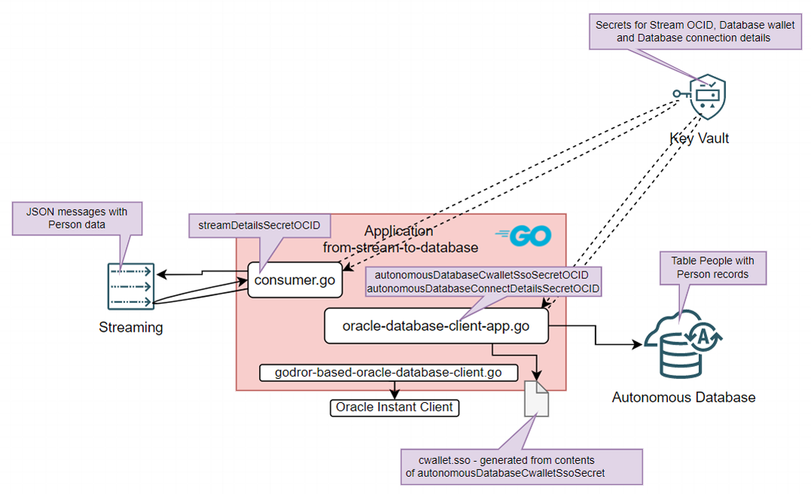
            </picture>

<h3 id="code-repository">Code repository</h3>

<p>All of the code you’ll need for this application resides in the directory, <code class="language-plaintext highlighter-rouge">applications/from-stream-to-database</code>. The files should be to familiar to you by now:</p>

<ul>
  <li><code class="language-plaintext highlighter-rouge">consumer.go</code> retrieves the secret with details for subscribing to the stream.</li>
  <li>
    <p><code class="language-plaintext highlighter-rouge">oracle-database-client-app.go</code> does the same thing for the database connection details.</p>

    <p>This file also exposes the function <code class="language-plaintext highlighter-rouge">PersistPerson</code> that can be invoked with an instance of type <code class="language-plaintext highlighter-rouge">Person</code> and subsequently turned into a new database record.</p>

    <p>Remember to make same changes in <code class="language-plaintext highlighter-rouge">oracle-database-client-app</code> as in the previous section. You’ll need add the OCID values for both the database connection details and the database wallet secrets.</p>
  </li>
</ul>

<h3 id="creating-a-secret-in-the-oci-vault">Creating a secret in the OCI Vault</h3>

<p>Next, you’ll need to create a secret in the OCI vault.</p>

<p>The secret will contain the stream details in a JSON string similar to the following:</p>

<div class="language-json highlighter-rouge"><div class="highlight"><pre class="highlight"><code><span class="w"> </span><span class="p">{</span><span class="w">
  </span><span class="nl">"streamMessagesEndpoint"</span><span class="w"> </span><span class="p">:</span><span class="w"> </span><span class="s2">"https://cell-1.streaming.us-ashburn-1.oci.oraclecloud.com"</span><span class="w"> </span><span class="p">,</span><span class="w">
  </span><span class="nl">"streamOCID"</span><span class="w">             </span><span class="p">:</span><span class="w"> </span><span class="s2">"ocid1.stream.oc1.iad.amaaaaaa6sde7caa56brreqvzptc37wytom7pjk7vx3qaflagk2t3syvk67q"</span><span class="w">
 </span><span class="p">}</span><span class="w">
</span></code></pre></div></div>

<blockquote class="alert">
  <p><strong>NOTE:</strong> Make sure to set the values that apply to your environment.</p>
</blockquote>

<ol>
  <li>
    <p><strong>Name the secret -</strong> For the purposes of this example, you can call the secret <em>stream-connection-details</em>.</p>

    <picture class="aligncenter">
             <source srcset="assets/way-to-go-on-oci-article-5-secret-stream-connection-details.png 1x" />
             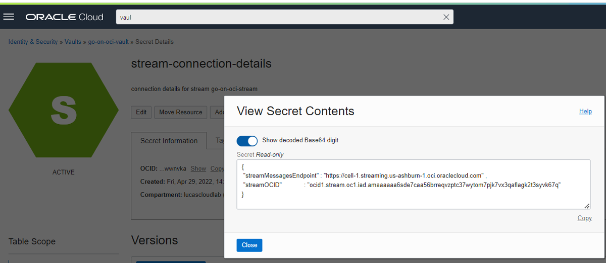
         </picture>
  </li>
  <li>
    <p><strong>Use the OCID for this new secret to set the value for <code class="language-plaintext highlighter-rouge">const streamDetailsSecretOCID</code> -</strong> You will need to set the value in the file <code class="language-plaintext highlighter-rouge">consumer.go</code>, located in <code class="language-plaintext highlighter-rouge">applications/from-stream-to-database/consumer.go</code>.</p>

    <p>The <code class="language-plaintext highlighter-rouge">main</code> function in this file subscribes to the stream and starts a series of iterations in which it polls the stream for new messages. Whenever a message is consumed, this function holds details for a person in a valid JSON message. This message is decoded into a Person instance and then subsequently passed on to <code class="language-plaintext highlighter-rouge">PersistPerson</code>.</p>
  </li>
  <li>
    <p><strong>Publish messages to the stream in the OCI Console</strong></p>
    <ol>
      <li>Navigate to the page for the stream in the console.</li>
      <li>
        <p>Select <strong>Produce Test Message</strong> and enter a valid JSON message with</p>

        <p>Person details that looks similar to the following:</p>

        <div class="language-json highlighter-rouge"><div class="highlight"><pre class="highlight"><code><span class="w">  </span><span class="p">{</span><span class="w">
  </span><span class="nl">"name"</span><span class="w"> </span><span class="p">:</span><span class="w"> </span><span class="s2">"John Doe"</span><span class="p">,</span><span class="w">
  </span><span class="nl">"age"</span><span class="w"> </span><span class="p">:</span><span class="w"> </span><span class="mi">34</span><span class="p">,</span><span class="w">
  </span><span class="nl">"comment"</span><span class="w"> </span><span class="p">:</span><span class="w"> </span><span class="s2">"Nice chap, good looking; not too bright"</span><span class="w">
  </span><span class="p">}</span><span class="w">
</span></code></pre></div>        </div>
      </li>
      <li>
        <p>Select <strong>Produce</strong> to publish the message on the topic and make it available for processing by the consumer.</p>

        <picture class="aligncenter">
        <source srcset="assets/way-to-go-on-oci-article-5-producepersontestmessage.png 1x" />
        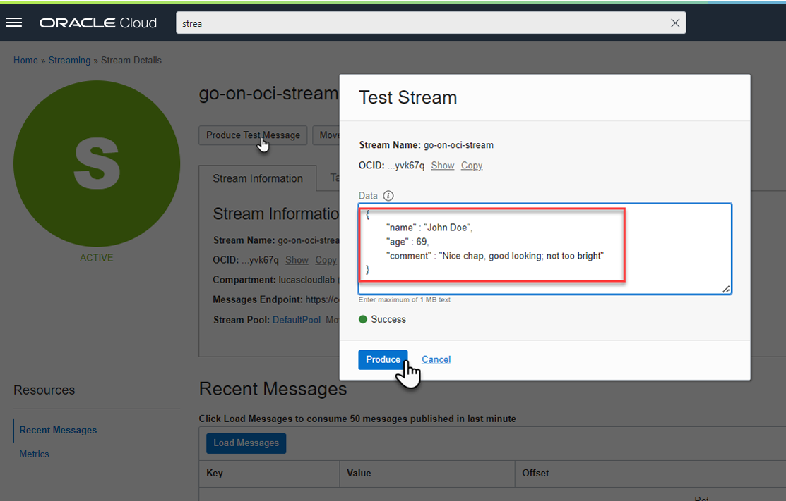
    </picture>

        <p>There’s no real need to worry, so feel free to publish the message multiple times. It won’t result in multiple database records since the name is used as identifier. The only difference you’re likely to see will be in the logging of the application. Of course, if you make changes in the name between the messages, no matter how small, you’ll wind up with a lot of additional records in the database.</p>
      </li>
    </ol>
  </li>
</ol>

<blockquote class="warn">
  <p><strong>NOTE:</strong> The code is not very robust. It will likely choke on messages with a different format, so make sure you stay consistent with what’s been presented.</p>
</blockquote>

<h2 id="deploy-person-producer-on-oke">Deploy Person Producer on OKE</h2>

<p>So far, we’ve discussed several runtime platforms for our Go applications on OCI. However, there’s still one we’ve yet to talk about: Kubernetes. Or, more specifically, Oracle Container Engine for Kubernetes (OKE).</p>

<p>Over the course of the series, we’ve taken our executable (compiled from the Go source code), deployed it on a compute instance, and then converted the source code into a serverless function. In order to begin our exploration of Kubernetes, we’ll containerize a standalone application and deploy it on an OKE cluster instance in this final section of the article.</p>

<p>There’ll be a lot of ground to cover, so let’s review the steps ahead of us:</p>

<ul>
  <li>build and run the enhanced <em>Person Producer</em> application locally</li>
  <li>create a lightweight container image for the <em>Person Producer</em> application</li>
  <li>run a local container to prove that the image is complete and correct</li>
  <li>push the container image to the OCI Container Image Registry</li>
  <li><strong>(optional)</strong> in order to ascertain that the images were all pushed correctly to the image registry, pull the container image from the registry and run it in one of the following: the Cloud Shell, on the <em>go-app-vm</em> compute instance, or in some other environment</li>
  <li>create an OKE cluster instance (using the quick start wizard and consisting of a single node)</li>
  <li>run the <em>Person Producer</em> application on the OKE cluster instance (manually deploying from *kubectl and passing the OCID of the publication stream as an environment variable)</li>
  <li>create an OCI DevOps deployment pipeline to publish the <em>Person Producer</em> container image to the OKE cluster instance; run the pipeline</li>
  <li>create an OCI DevOps build pipeline to build the <em>Person Producer</em> from the source code repository, publish the image to the container image registry, and trigger the deployment pipeline</li>
</ul>

<p>When it all comes together, the end result can be visualized as:</p>

<picture class="aligncenter">
                <source srcset="assets/way-to-go-on-oci-article-5-visualization-personproducer-dev-build-depl.png 1x" />
                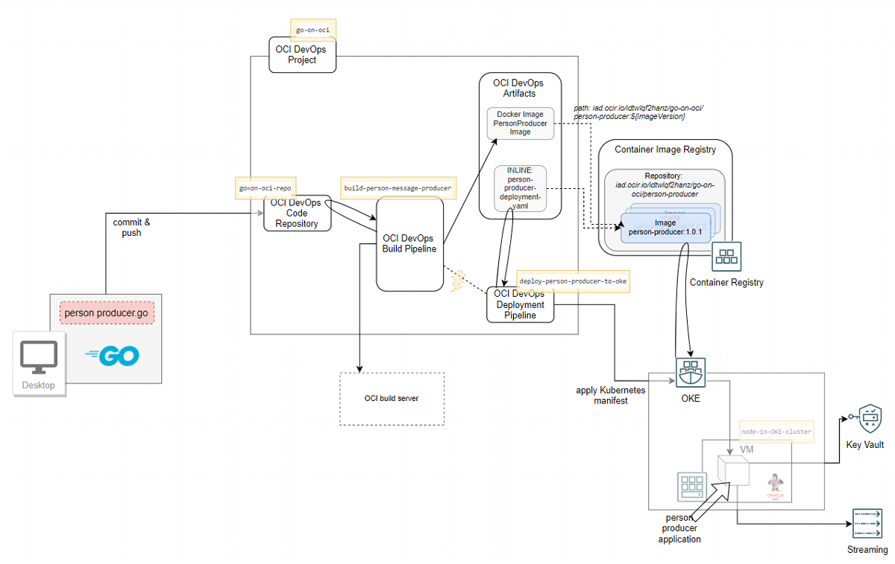
            </picture>

<h3 id="build-and-run-the-person-producer-application-locally">Build and Run the Person Producer Application locally</h3>

<p>The Go application that publishes person messages to the Stream on OCID can be found in directory, <code class="language-plaintext highlighter-rouge">applications/person-message-producer</code>, in the source code repository for this article series. The code for the message producer is in file, <code class="language-plaintext highlighter-rouge">person-producer.go</code>.</p>

<h4 id="set-up-the-message-producer-application">Set up the message producer application</h4>

<p>The code needs to have an environment variable set that indicates which secret in the OCI vault contains the stream details. If you recall, that secret was defined earlier in this article as <em>stream-connection-details</em>.</p>

<ol>
  <li>
    <p>Set the <code class="language-plaintext highlighter-rouge">STREAM_DETAILS_SECRET_OCID</code>:</p>

    <div class="language-console highlighter-rouge"><div class="highlight"><pre class="highlight"><code><span class="go">  export STREAM_DETAILS_SECRET_OCID="ocid1.vaultsecret.oc1.iad.amaaaaaa6sde7caa6m5tuweeu3lbz22lf37y2dsbdojnhz2owmgvqgwwnvka"
</span></code></pre></div>    </div>
  </li>
  <li>
    <p>Replace the value with the OCID of the secret in your environment.</p>

    <blockquote>
      <p><strong>NOTE:</strong> You just used this OCID in the previous section to set the value for <code class="language-plaintext highlighter-rouge">const streamDetailsSecretOCID</code> in the file <code class="language-plaintext highlighter-rouge">consumer.go</code>.</p>
    </blockquote>
  </li>
  <li>
    <p>Verify that there’s an OCI config file</p>

    <p>In order to run the application locally, there needs to be an OCI configuration file.  By default, this config file is assumed to be called <code class="language-plaintext highlighter-rouge">config</code> and located in <code class="language-plaintext highlighter-rouge">$HOME/.oci</code>. However, you’re free to use a different file name or even a different location.  All you need to do is specify the fully-qualified path to the configuration file using the environment variable <em>OCI_CONFIG_FILE</em>.</p>

    <p>As noted above, the default value of <em>OCI_CONFIG_FILE</em> is <code class="language-plaintext highlighter-rouge">$HOME/.oci/config</code>.</p>
  </li>
</ol>

<h4 id="run-the-message-producer-application">Run the message producer application</h4>

<p>With the reference to the OCI configuration file in place, we’re ready to run the application and start producing random person messages to the OCI Stream (<code class="language-plaintext highlighter-rouge">go-on-oci-stream</code>).</p>

<ol>
  <li>
    <p>To start the application from the command line using, run:</p>

    <div class="language-console highlighter-rouge"><div class="highlight"><pre class="highlight"><code><span class="go"> export INSTANCE_PRINCIPAL_AUTHENTICATION="NO"
 go run person-producer.go
</span></code></pre></div>    </div>

    <p>On the command line this looks like:</p>

    <picture class="aligncenter">
             <source srcset="assets/way-to-go-on-oci-article-5-commandline-output.png 1x" />
             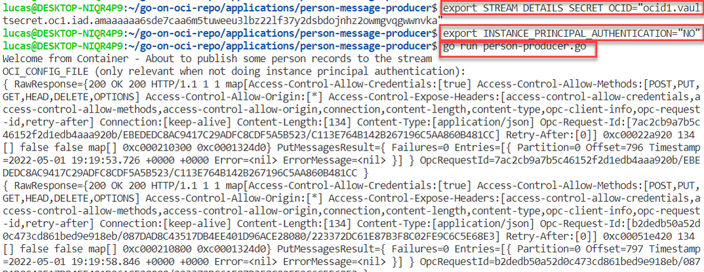
         </picture>
  </li>
  <li>
    <p>To check the messages that are published to the stream in the console:</p>

    <picture class="aligncenter">
             <source srcset="assets/way-to-go-on-oci-article-5-personmessages-in-console.png 1x" />
             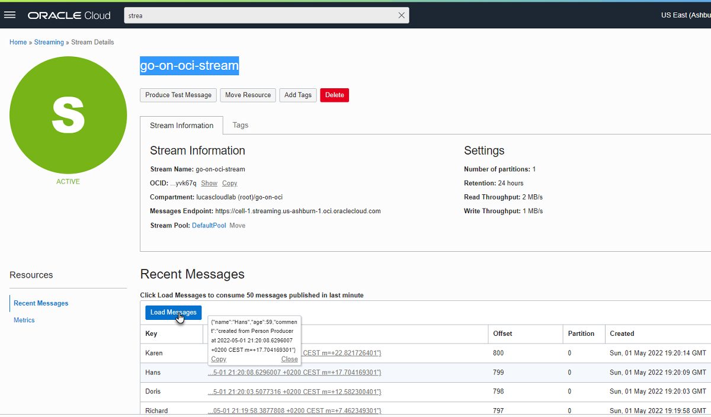
         </picture>
  </li>
</ol>

<h3 id="build-a-lightweight-container-image-for-the-application">Build a lightweight Container Image for the Application</h3>

<p>In may still seem far off, but the ultimate goal is to run the message producer as a containerized application on an OKE cluster. An essential step to getting there is creating a container image for the application.</p>

<p>The Go application is already built into a binary executable, so the resulting container image is just a single binary executable file. Well, almost. Ideally, we want the container image to be small. So, for example, something akin to the lean Alpine Linux base image.</p>

<p>We also need to make that the right ca-certificates are installed in the image, otherwise the requests to the HTTPS API endpoints will fail.</p>

<p>Lastly, the Go application needs to be compiled for the proper runtime environment.</p>

<p>In this case, the specific build command we need to create the smallest possible executable able to run inside the Alpine container is:</p>

<div class="language-console highlighter-rouge"><div class="highlight"><pre class="highlight"><code><span class="go">CGO_ENABLED=0 GOOS=linux go build -o person-producer -ldflags="-s -w" -tags=containers
</span></code></pre></div></div>

<blockquote class="alert">
  <p><strong>NOTE:</strong> The result of this command is a standalone binary executable file of about 6MB.</p>
</blockquote>

<h4 id="set-up-the-container-image">Set up the container image</h4>

<p>The container image is built from a Dockerfile called <code class="language-plaintext highlighter-rouge">DockerfileAlpine</code> and is located in the same directory as <code class="language-plaintext highlighter-rouge">person-producer.go</code>.</p>

<p>It has the following content:</p>

<div class="language-docker highlighter-rouge"><div class="highlight"><pre class="highlight"><code><span class="k">FROM</span><span class="s"> alpine:latest</span>

<span class="k">WORKDIR</span><span class="s"> /app</span>

<span class="c"># copy the OCI Configuration file and the associated private key file - note: only for testing the container image locally; </span>
<span class="c"># remove these lines before building the image that is pushed to the container image registry </span>
<span class="k">COPY</span><span class="s"> config  ./ </span>
<span class="k">COPY</span><span class="s"> oci_api_key.pem  ./ </span>

<span class="c"># add ca-certificates to allow signed communications</span>
<span class="k">RUN </span>apk <span class="nt">--no-cache</span> add ca-certificates

<span class="c"># copy the application's binary executable </span>
<span class="k">COPY</span><span class="s"> person-producer  ./ </span>
<span class="k">CMD</span><span class="s"> ["./person-producer"]</span>
</code></pre></div></div>

<p>What this code accomplishes:</p>

<ul>
  <li>The container image is created from the latest Alpine image.</li>
  <li>A directory called <code class="language-plaintext highlighter-rouge">/app</code> is created and used for copying various files to.</li>
  <li>The files that are copied to <code class="language-plaintext highlighter-rouge">/app</code> are:
    <ul>
      <li><code class="language-plaintext highlighter-rouge">config</code> (the OCI Configuration file)</li>
      <li><code class="language-plaintext highlighter-rouge">oci_api_key.pem</code> (the private key file referenced from the OCI Configuration file)</li>
      <li><code class="language-plaintext highlighter-rouge">person-producer</code> (the binary executable produced using <code class="language-plaintext highlighter-rouge">go build</code>).</li>
    </ul>
  </li>
  <li>The <code class="language-plaintext highlighter-rouge">RUN apk</code> line adds the required certificates to the image.</li>
  <li><code class="language-plaintext highlighter-rouge">CMD ["./person-producer"]</code> makes the application start up when a container based on this image starts running</li>
</ul>

<h4 id="build-the-container-image">Build the container image</h4>

<ol>
  <li>Copy the file <code class="language-plaintext highlighter-rouge">$HOME/.oci/config</code> and the referenced .pem file, <em>oci_api_key.pem</em>, to the current directory.</li>
  <li>
    <p>Update the  <code class="language-plaintext highlighter-rouge">config</code> file by setting the <code class="language-plaintext highlighter-rouge">key_file</code> parameter to:</p>

    <div class="language-text highlighter-rouge"><div class="highlight"><pre class="highlight"><code> key_file=/app/oci_api_key.pem
</code></pre></div>    </div>

    <blockquote class="warn">
      <p><strong>NOTE:</strong> Normally, adding the OCI config and private key file should never be done in a container image that leaves your machine. We’re only doing so now to test the image locally. Once we’re certain everything is working properly, we’ll rebuild the image without these files and only then push it to the container image registry.</p>
    </blockquote>
  </li>
  <li>
    <p>Build the container image locally using this command:</p>

    <div class="language-console highlighter-rouge"><div class="highlight"><pre class="highlight"><code><span class="go"> docker build -t person-producer:1.0.0 -f DockerfileAlpine .
</span></code></pre></div>    </div>

    <blockquote class="alert">
      <p><strong>NOTE:</strong> The first time through, building the container will take a while since the base image needs to be loaded. In subsequent iterations, it should only take 15 seconds on average.</p>
    </blockquote>
  </li>
  <li>
    <p>To check the success of the build process, inspect the command line output using <code class="language-plaintext highlighter-rouge">docker images | grep person-producer</code> and then run a container based on the image:</p>

    <div class="language-console highlighter-rouge"><div class="highlight"><pre class="highlight"><code><span class="gp"> docker run --name person-messenger -e OCI_CONFIG_FILE=/app/config -e INSTANCE_PRINCIPAL_AUTHENTICATION=NO -e STREAM_DETAILS_SECRET_OCID=$</span>STREAM_DETAILS_SECRET_OCID person-producer:1.0.0
</code></pre></div>    </div>

    <p>There will be some positive output from the container:</p>

    <div class="language-console highlighter-rouge"><div class="highlight"><pre class="highlight"><code><span class="gp"> docker run -e OCI_CONFIG_FILE=/app/config -e INSTANCE_PRINCIPAL_AUTHENTICATION=NO -e STREAM_DETAILS_SECRET_OCID=$</span>STREAM_DETAILS_SECRET_OCID person-producer:1.0.0
<span class="go"> Welcome from Container - About to publish some person records to the stream
 OCI_CONFIG_FILE (only relevant when not doing instance principal authentication): /app/config
 { RawResponse={200 OK 200 HTTP/1.1 1 1 map[Access-Control-Allow-Credentials:[true] Access-Control-Allow-Methods:[POST,PUT,GET,HEAD,DELETE,OPTIONS] Access-Control-Allow-Origin:[*] Access-Control-Expose-Headers:[access-control-allow-credentials,access-control-allow-methods,access-control-allow-origin,connection,content-length,content-type,opc-client-info,opc-request-id,retry-after] Connection:[keep-alive] Content-Length:[134] Content-Type:[application/json] Opc-Request-Id:[873706f4a
</span><span class="c"> ....
</span></code></pre></div>    </div>

    <p>And if you check in the OCI console for the Stream details, you’ll find new Person messages published by the application running in the container. This is just what we’re looking for and gives us confidence in the container image.</p>
  </li>
</ol>

<h4 id="prepare-the-container-image-for-non-local-deployment">Prepare the container image for non-local deployment</h4>

<p>We’re almost ready to move outside the local environment, but we’re not quite there yet. We still need to remove the secrets references in the image.</p>

<ol>
  <li>Open the file <code class="language-plaintext highlighter-rouge">DockerfileAlpine</code>.</li>
  <li>Either comment out or remove lines 7 and 8 that copy the OCI Config and private key file.</li>
  <li>
    <p>Rebuild the container image:</p>

    <div class="language-console highlighter-rouge"><div class="highlight"><pre class="highlight"><code><span class="go"> docker build -t person-producer:1.0.1 -f DockerfileAlpine .
</span></code></pre></div>    </div>

    <p>The console should echo something similar to the following:</p>

    <div class="language-console highlighter-rouge"><div class="highlight"><pre class="highlight"><code><span class="go"> The 1.0.1 image does not have the private parts that we do not want to ship.
</span></code></pre></div>    </div>

    <p>And now, we’re all set!</p>
  </li>
</ol>

<h3 id="push-the-container-image-to-the-oci-container-image-registry">Push the Container Image to the OCI Container Image Registry</h3>

<p>Now that we have a container image free of secrets, it will need to be pushed to the OCI Container Image Registry before it can be deployed to an OKE Cluster. We’ll go through the steps in the current section.</p>

<p>Before we dive into the specifics, lets give some context about what we’ll be doing in the Container Image Registry. First some definitions. A repository inside the container registry is a collection point for versions of a container image. So far, fairly straightforward. Such a repository is created when an image is pushed, based on the name of the image. The name given to the repository is typically drawn from: <code class="language-plaintext highlighter-rouge">&lt;region key&gt;/&lt;namespace&gt;/&lt;prefix&gt;/&lt;image-name&gt;:&lt;version tag&gt;</code>. The <em>prefix</em> and <em>image-name</em> together become the name of the repository. It’s important to note here that this name is <em>not</em> tied to a compartment. However, in order to organize the Container Image Registry in a way similar to how you’ve organized compartments, you may consider explicitly creating the repository in a specific compartment. This can be done through the OCI Console, the OCI CLI, or even through an API or Terraform operation. By establishing the repository beforehand, you can create it in the context of a specific compartment. The name of the resulting compartment (or even the names of levels of nested compartments) becomes part of the prefix of the container images.</p>

<p><strong>Example:</strong></p>

<p>Let’s create a repository in the OCI Container Image Registry in the context of compartment <code class="language-plaintext highlighter-rouge">go-on-oci</code> and call the repository <code class="language-plaintext highlighter-rouge">person-producer</code>. When the container image is pushed as <code class="language-plaintext highlighter-rouge">&lt;region key&gt;/&lt;namespace&gt;/go-on-oci/person-producer:&lt;version tag&gt;</code>, this image will be stored in the repository.</p>

<blockquote class="notice">
  <p><strong>NOTE:</strong> If you don’t create the repository before pushing the image, a repository is created automatically in the context of the root compartment and has the name, <code class="language-plaintext highlighter-rouge">go-on-oci/person-producer</code>. Everything will still work fine, but the repository structure is just a little less nice.</p>
</blockquote>

<picture class="aligncenter">
                <source srcset="assets/way-to-go-on-oci-article-5-create-image-repository.png 1x" />
                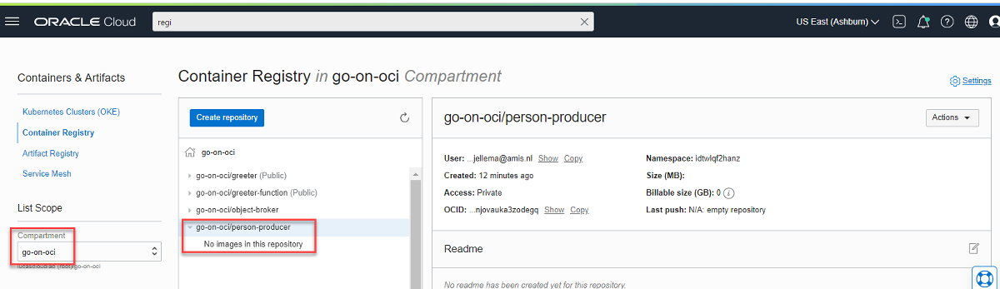
            </picture>

<ol>
  <li>
    <p>On the command line of your development environment, <code class="language-plaintext highlighter-rouge">docker login</code> to <code class="language-plaintext highlighter-rouge">&lt;region key&gt;.ocir.io</code>, using your specific region key. You may recall, we did this in the third article in the series.</p>

    <p>You’ll need the login name and the authentication token.</p>

    <div class="language-console highlighter-rouge"><div class="highlight"><pre class="highlight"><code><span class="go"> docker login iad.ocir.io
</span></code></pre></div>    </div>
  </li>
  <li>
    <p>Tag the locally-built image for use in the OCI Container Image Registry by running the command:</p>

    <div class="language-console highlighter-rouge"><div class="highlight"><pre class="highlight"><code><span class="gp"> docker tag person-producer:1.0.1 &lt;region key&gt;</span>/&lt;namespace&gt;/&lt;prefix&gt;/person-producer:1.0.1
</code></pre></div>    </div>

    <p>Example:</p>

    <div class="language-console highlighter-rouge"><div class="highlight"><pre class="highlight"><code><span class="go"> docker tag person-producer:1.0.1 iad.ocir.io/idtwlqf2hanz/go-on-oci/person-producer:1.0.1
</span></code></pre></div>    </div>
  </li>
  <li>
    <p>With the login done and this tag in place, the container image can be pushed.</p>

    <div class="language-console highlighter-rouge"><div class="highlight"><pre class="highlight"><code><span class="gp"> docker push &lt;region key&gt;</span>/&lt;namespace&gt;/&lt;prefix&gt;/person-producer:1.0.1
</code></pre></div>    </div>

    <p>Example:</p>

    <div class="language-console highlighter-rouge"><div class="highlight"><pre class="highlight"><code><span class="go"> docker push iad.ocir.io/idtwlqf2hanz/go-on-oci/person-producer:1.0.1
</span></code></pre></div>    </div>
  </li>
  <li>
    <p>To check the success of the push, inspect the OCI Container Image Registry through the OCI console.</p>
  </li>
</ol>

<h3 id="optional-run-a-container-from-the-image-in-cloud-shell">(Optional) Run a Container from the Image in Cloud Shell</h3>

<p>There’s an easy way to verify the existence of the container image.</p>

<p>Open the Cloud Shell from the OCI Console and run:</p>

<div class="language-console highlighter-rouge"><div class="highlight"><pre class="highlight"><code><span class="go">docker run -e INSTANCE_PRINCIPAL_AUTHENTICATION=NO iad.ocir.io/idtwlqf2hanz/go-on-oci/person-producer:1.0.1
</span></code></pre></div></div>

<p>The will be download the image. If you run the image, it’ll quickly exit because no OCI configuration file can be found. But, this shouldn’t be too surprising. However, it does show us that the image was pushed successfully to the image registry.</p>

<h3 id="create-an-oke-cluster-instance">Create an OKE Cluster Instance</h3>

<p>Creating an Kubernetes cluster on OCI may sound like a daunting task, but it’s actually really simple. OCI provides a convenient wizard that will handle the entire process for you with minimal input.</p>

<p>Through the wizard, you can specify the number of nodes (either <em>Compute Instances</em> or <em>VMs</em>) in the cluster and what the shape of these VMs should be. You’re not locked into this configuration, so you can easily change this later on.</p>

<p>After you’ve made that decision (or accepted the default settings), you can leave it to the wizard to take care of the network configuration, the compute instances, the node pool formed by the instances, and the Kubernetes cluster that sits on top of the node pool itself. It might take a few minutes, but once the OKE instance is available, you’re all ready to accept deployments.</p>

<h4 id="oci-wizard">OCI wizard</h4>

<ol>
  <li>
    <table>
      <tbody>
        <tr>
          <td>Enter <em>ok</em> in the search box and then select the link **Kubernetes Clusters (OKE)</td>
          <td>Containers &amp; Artifacts**.</td>
        </tr>
      </tbody>
    </table>
  </li>
  <li>Select <strong>Create cluster</strong>.
 A popup window appears with two radio buttons: <em>Quick create</em> and <em>Custom create</em>.</li>
  <li>
    <p>Accept the first one (<em>Quick create</em>) and then select <strong>Launch workflow</strong>.</p>

    <picture class="aligncenter">
             <source srcset="assets/way-to-go-on-oci-article-5-quickstart-oke.png 1x" />
             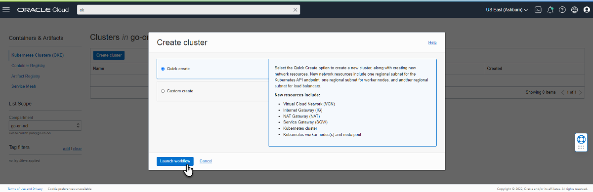
         </picture>

    <blockquote class="notice">
      <p>You’re now in the wizard.</p>
    </blockquote>
  </li>
  <li><strong>[Wizard]</strong>
    <ol>
      <li>Select <strong>Public Endpoint</strong> and then <strong>Private Workers</strong>.
        <ol>
          <li>You can accept the shape <em>VM.Standard.E3.Flex</em> or pick a different one.</li>
          <li>You can accept three as the number of nodes, but just one node is enough for our purposes.</li>
          <li>Select <strong>Next</strong>.</li>
        </ol>

        <picture class="aligncenter">
         <source srcset="assets/way-to-go-on-oci-article-5-quickcreate-oke-step1.png 1x" />
         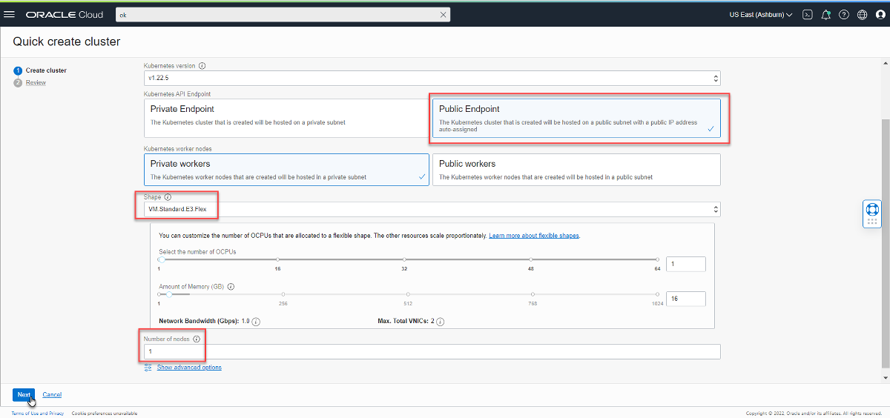
     </picture>
      </li>
      <li>
        <p>This next part of the wizard provides an overview of what the wizard will do on our behalf.</p>

        <p>Here, you’ll be able to perform a final inspection.
 If you like the proposed action, select <strong>Creat cluster</strong>.</p>

        <picture class="aligncenter">
         <source srcset="assets/way-to-go-on-oci-article-5-quickcreate-oke-step2.png 1x" />
         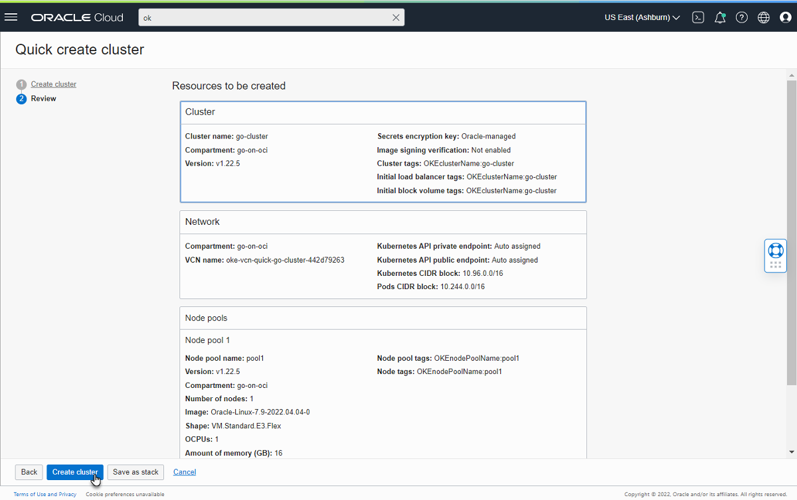
     </picture>
      </li>
    </ol>
  </li>
</ol>

<p>The wizard will provide all required resources and perform any actions that are needed, including network configuration, creating a new compute instance, and provisioning the OKE master. There’s also a progress page available so you can keep track of the status of the actions.</p>

<picture class="aligncenter">
                <source srcset="assets/way-to-go-on-oci-article-5-progress-page-oke-wizard.png 1x" />
                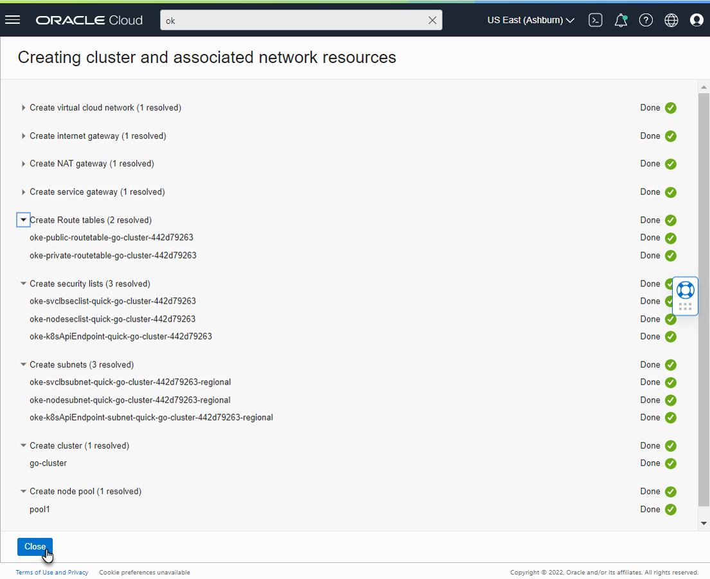
            </picture>

<h4 id="inspecting-the-kubernetes-cluster">Inspecting the Kubernetes cluster</h4>

<p>Once all actions are complete, you can inspect the details of the new Kubernetes cluster, the node pool, the network resources, and the compute instance.</p>

<p>The following images shows the details for the node pool and the node(s) in the pool.</p>

<picture class="aligncenter">
                <source srcset="assets/way-to-go-on-oci-article-5-nodepool-for-oke.png 1x" />
                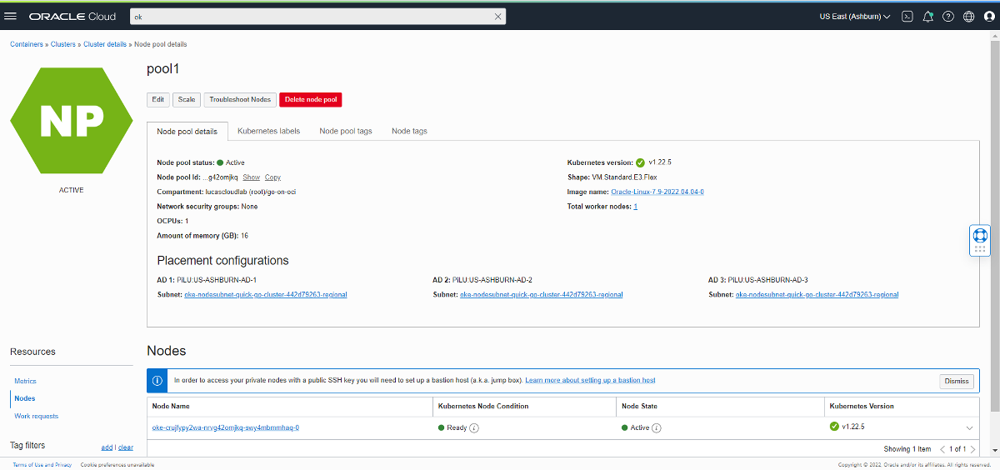
            </picture>

<blockquote class="alert">
  <p><strong>NOTE:</strong> The dynamic group <em>go-on-oci-instances</em> that was defined in the first article in this series was created in such a way that it includes all compute instances in the compartment.</p>

  <p>This means that if you’re still working in that same compartment and the OKE cluster is now also running in that compartment, the node in the OKE instance is a member of the dynamic group and inherits <em>all OCI IAM permissions granted to the group</em>. Containers running in Pods on the OKE instance and scheduled on this node also inherit these privileges when they use instance principal authentication.</p>
</blockquote>

<h3 id="connect-to-the-oke-cluster-instance">Connect to the OKE Cluster instance</h3>

<p>Interaction with a Kubernetes Cluster is typically done through the <code class="language-plaintext highlighter-rouge">kubectl</code> command line tool. We can use either the <code class="language-plaintext highlighter-rouge">kubectl</code> installation included in Cloud Shell, or a local installation of <code class="language-plaintext highlighter-rouge">kubectl</code>. However, before we can use <code class="language-plaintext highlighter-rouge">kubectl</code> to access a cluster, we have to specify the cluster on which to perform operations by setting up the cluster’s <code class="language-plaintext highlighter-rouge">kubeconfig</code> file.</p>

<blockquote class="alert">
  <p><strong>NOTE:</strong> At the time of writing, to access a cluster using <code class="language-plaintext highlighter-rouge">kubectl</code> in Cloud Shell, the Kubernetes API endpoint must have a public IP address. Fortunately for us, our cluster alreadt does, thanks to the wizard!</p>
</blockquote>

<h4 id="set-up">Set up</h4>

<ol>
  <li>
    <p>In the <strong>Cluster Details</strong> window, select <strong>Access Cluster</strong> to display the <strong>Access Your Cluster</strong> dialog box.</p>

    <picture class="aligncenter">
             <source srcset="assets/way-to-go-on-oci-article-5-accesscluster.png 1x" />
             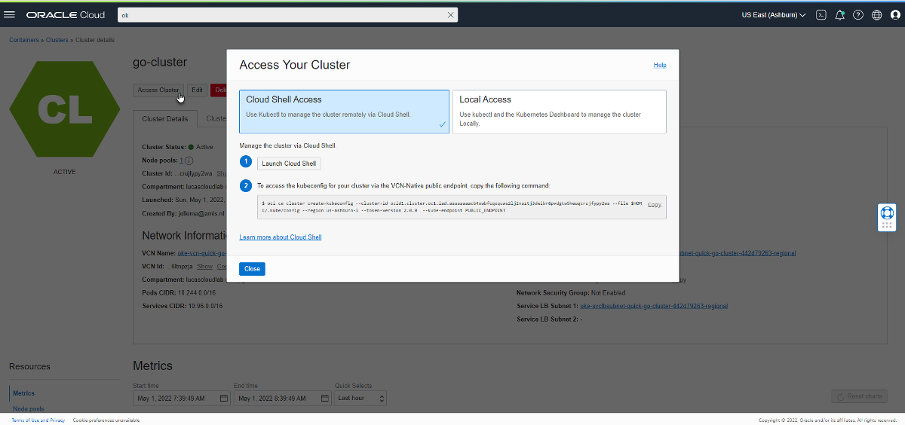
         </picture>
  </li>
  <li>Select <strong>Cloud Shell Access</strong> and then select <strong>Copy</strong> to copy the shell statement under (2) to the clipboard.</li>
  <li>Select <strong>Launch Cloud Shell</strong> to display the Cloud Shell window if it’s not already open.</li>
  <li>Paste the shell statement into the Cloud Shell and then press enter to execute the statement.</li>
</ol>

<h4 id="config-file">Config file</h4>

<p>Once this is complete, the config file in <code class="language-plaintext highlighter-rouge">$HOME/.kube</code> of your cloudshell environment is written (or updated if it already existed) with details for the new OKE cluster. Note that the OCI CLI understands the string PUBLIC_ENDPOINT and writes the proper Public IP Address for the cluster into the configuration file.</p>

<p>As long as we don’t change the name or location of the config file from its default, we don’t have to explicitly set the <code class="language-plaintext highlighter-rouge">KUBECONFIG</code> environment variable to refer to it, and we can now run <code class="language-plaintext highlighter-rouge">kubectl</code> to interact with our new cluster.</p>

<h4 id="interacting-with-the-new-cluster">Interacting with the new cluster</h4>

<p><strong>Local interaction:</strong>
In addition to cluster access in Cloud Shell, we probably want to have local interaction from our laptop. It should have <code class="language-plaintext highlighter-rouge">kubectl</code> running already, as well as OCI CLI with configuration settings that provide access to the OCI tenancy.</p>

<ol>
  <li>In the OKE Cluster Details window in OCI Console, select <strong>Access Cluster</strong> again to display the <strong>Access Your Cluster</strong> dialog box.</li>
  <li>This time, select  <strong>Local Access</strong>.</li>
  <li>
    <p>Copy the first statement (for public IP endpoint) in step 2 and execute it locally.</p>

    <p>At this point, <code class="language-plaintext highlighter-rouge">kubectl</code> should be set up and ready for action. The file <code class="language-plaintext highlighter-rouge">$HOME/.kube/config</code> is either created or extended with an extra context. The current-context is set to this newly created one for the OKE cluster.</p>
  </li>
</ol>

<p><strong>Test interaction:</strong></p>

<p>For a quick test, let’s lists the node(s) that make up the OKE cluster. If you were to run the following command locally, you’ll now get the same result as in cloud shell.</p>

<div class="language-console highlighter-rouge"><div class="highlight"><pre class="highlight"><code><span class="go">kubectl get nodes
</span></code></pre></div></div>

<h4 id="kubernetes-dashboard">Kubernetes Dashboard</h4>

<p>The Kubernetes Dashboard is a well-known UI for monitoring and managing the Kubernetes Cluster. While many other tools are available to make life easier, the dashboard remains as a comfortable and familiar fallback option.</p>

<p>Perhaps not unsurprisingly, the Dashboard itself is a Kubernetes application, since it’s just a collection of resources that needs to be created on the cluster. This means that there’s a predefined collection of yaml files available that can be applied with a single command:</p>

<div class="language-console highlighter-rouge"><div class="highlight"><pre class="highlight"><code><span class="go">kubectl apply -f https://raw.githubusercontent.com/kubernetes/dashboard/v2.5.0/aio/deploy/recommended.yaml
</span></code></pre></div></div>

<p><strong>Example - check pods:</strong></p>

<ol>
  <li>
    <p>Let’s take a look at the pods in the newly-created namespace <em>kubernetes-dashboard</em>:</p>

    <div class="language-console highlighter-rouge"><div class="highlight"><pre class="highlight"><code><span class="go"> kubectl -n kubernetes-dashboard get pods
</span></code></pre></div>    </div>
  </li>
  <li>
    <p>Access the dashboard in the browser, using: <code class="language-plaintext highlighter-rouge">http://localhost:8001/api/v1/namespaces/kubernetes-dashboard/services/https:kubernetes-dashboard:/proxy/#/workloads?namespace=default</code></p>
  </li>
  <li>
    <p>When the GUI appears in the browser, you’ll be prompted for either a <code class="language-plaintext highlighter-rouge">kubeconfig</code> file or a token.</p>

    <p>Let’s go with the token:</p>

    <ol>
      <li>
        <p><strong>Create the service account and <code class="language-plaintext highlighter-rouge">clusterbinding</code></strong> - Use the YAML file, <code class="language-plaintext highlighter-rouge">oke-admin-service-account.yaml</code>, to create both the service account and the <code class="language-plaintext highlighter-rouge">clusterrolebinding</code> in the cluster (as described in the <a href="https://docs.oracle.com/en-us/iaas/Content/ContEng/Tasks/contengstartingk8sdashboard.htm">OCI Documentation for Accessing an OKE Cluster Instance</a>):</p>

        <div class="language-console highlighter-rouge"><div class="highlight"><pre class="highlight"><code><span class="go"> kubectl apply -f oke-admin-service-account.yaml
</span></code></pre></div>        </div>
      </li>
      <li>
        <p><strong>Generate token -</strong> Run the following command:</p>

        <div class="language-console highlighter-rouge"><div class="highlight"><pre class="highlight"><code><span class="gp"> kubectl -n kube-system describe secret $</span><span class="o">(</span>kubectl <span class="nt">-n</span> kube-system get secret | <span class="nb">grep </span>oke-admin | <span class="nb">awk</span> <span class="s1">'{print $1}'</span><span class="o">)</span>
</code></pre></div>        </div>

        <p>This will result in a token be written to the console output:</p>

        <div class="language-console highlighter-rouge"><div class="highlight"><pre class="highlight"><code><span class="go"> Name:         oke-admin-token-4dg6k
 Namespace:    kube-system
</span><span class="gp"> Labels:       &lt;none&gt;</span><span class="w">
</span><span class="go"> Annotations:  kubernetes.io/service-account.name: oke-admin
                   kubernetes.io/service-account.uid: 1e68cd7b-d362-4de4-8ce8-293ff9afecb4

 Type:  kubernetes.io/service-account-token

 Data
 ====
 token:      eyJhbGciOiJSUzI1NiIsImtpZCI6InZ1WFprUDRfTjRLYWpNNTVmYmFIMkNpY24yamxhN21IUmdpdjAyZzlVUVkifQ.ZWFjY291bnQvc2VjcmV0L...Weiw-zWpS1bG9GWlSVQxTQa1fVGOqWEQRtKHt_A0YEVn1bise-R_INwKmDkNQ7nbA1jmZycUOOgAePtIFqbjtvlY6QkA2lAkCQz0-YshIc01XCT7yieymzbyxhBWedbr9bIlHZW3qRb0IeEs_taAghkLHf23S71GxIbF558UUpE9w
 ca.crt:     1285 bytes
 namespace:  11 bytes
</span></code></pre></div>        </div>

        <blockquote class="notice">
          <p><strong>NOTE:</strong> The token is the section of output that starts with <em>eyJh</em> and ends with <em>pE9w</em>.</p>
        </blockquote>
      </li>
      <li>
        <p><strong>Apply token -</strong> Copy and paste this value into the window that prompts you for a token.</p>
      </li>
    </ol>
  </li>
</ol>

<h3 id="run-the-person-producer-application-on-the-oke-cluster-instance">Run the Person Producer Application on the OKE Cluster instance</h3>

<p>The file, <code class="language-plaintext highlighter-rouge">person-producer-deployment.yaml</code>, contains the specification for the Kubernetes resources that we’d like to deploy on the cluster. Ultimately, we’re looking to deploy with a Pod based on the container image (<code class="language-plaintext highlighter-rouge">&lt;region key&gt;.ocir.io/&lt;namespace&gt;/go-on-oci/person-producer:1.0.1</code>) that we <a href="#push-the-container-image-to-the-oci-container-image-registry">pushed a little while back</a>.</p>

<p>Here are the contents of the deployment specification:</p>

<div class="language-yaml highlighter-rouge"><div class="highlight"><pre class="highlight"><code><span class="na">apiVersion</span><span class="pi">:</span> <span class="s">apps/v1</span>
<span class="na">kind</span><span class="pi">:</span> <span class="s">Deployment</span>
<span class="na">metadata</span><span class="pi">:</span>
  <span class="na">name</span><span class="pi">:</span> <span class="s">personproducer-deployment</span>
<span class="na">spec</span><span class="pi">:</span>
  <span class="na">selector</span><span class="pi">:</span>
     <span class="na">matchLabels</span><span class="pi">:</span>
        <span class="na">app</span><span class="pi">:</span> <span class="s">personproducer</span>
  <span class="na">replicas</span><span class="pi">:</span> <span class="m">1</span>
  <span class="na">template</span><span class="pi">:</span>
     <span class="na">metadata</span><span class="pi">:</span>
        <span class="na">labels</span><span class="pi">:</span>
          <span class="na">app</span><span class="pi">:</span> <span class="s">personproducer</span>
     <span class="na">spec</span><span class="pi">:</span>
        <span class="na">containers</span><span class="pi">:</span>
        <span class="pi">-</span> <span class="na">name</span><span class="pi">:</span> <span class="s">personproducer</span>
     <span class="c1"># enter the path to your image, be sure to include the correct region prefix    </span>
          <span class="na">image</span><span class="pi">:</span> <span class="s">iad.ocir.io/idtwlqf2hanz/go-on-oci/person-producer:1.0.1</span>
          <span class="na">env</span><span class="pi">:</span>
          <span class="pi">-</span> <span class="na">name</span><span class="pi">:</span> <span class="s">STREAM_DETAILS_SECRET_OCID</span>
             <span class="s">value</span><span class="err">:</span> <span class="s2">"</span><span class="s">ocid1.vaultsecret.oc1.iad.amaaaaaa6sde7caa6m5tuweeu3lbz22lf37y2dsbdojnhz2owmgvqgwwnvka"</span>
     <span class="err">   </span><span class="na">imagePullSecrets</span><span class="pi">:</span>
     <span class="c1"># enter the name of the secret you created  </span>
        <span class="pi">-</span> <span class="na">name</span><span class="pi">:</span> <span class="s">ocirsecret</span>
</code></pre></div></div>

<ol>
  <li>Update values in <code class="language-plaintext highlighter-rouge">person-producer-deployment.yaml</code>:
    <ul>
      <li><strong><code class="language-plaintext highlighter-rouge">STREAM_DETAILS_SECRET_OCID</code></strong> - Change the value of this <em>env</em> key to the value that applies in your environment.</li>
      <li><strong><code class="language-plaintext highlighter-rouge">image</code></strong> - Update the value to correspond with the image you pushed to the OCI Container Image Registry.</li>
    </ul>
  </li>
  <li>
    <p><strong>Authentication -</strong> The OKE Cluster can’t just start pulling container images from the registry. It needs to use proper authentication details to log in to the registry. These details are represented in this deployment specification by the secret <code class="language-plaintext highlighter-rouge">ocirsecret</code>. However, the one wrinkle is that this secret doesn’t exist yet on the OKE cluster.</p>

    <p><strong>Create <code class="language-plaintext highlighter-rouge">ocirsecret</code> -</strong> Run the following command in <code class="language-plaintext highlighter-rouge">kubectl</code>:</p>

    <div class="language-console highlighter-rouge"><div class="highlight"><pre class="highlight"><code><span class="gp"> kubectl create secret docker-registry &lt;secret-name&gt;</span><span class="w"> </span><span class="nt">--docker-server</span><span class="o">=</span>&lt;region-key&gt;.ocir.io <span class="nt">--docker-username</span><span class="o">=</span><span class="s1">'&lt;tenancy-namespace&gt;/&lt;oci-username&gt;'</span> <span class="nt">--docker-password</span><span class="o">=</span><span class="s1">'&lt;oci-auth-token&gt;'</span> <span class="nt">--docker-email</span><span class="o">=</span><span class="s1">'&lt;email-address&gt;'</span>
</code></pre></div>    </div>

    <p>This creates a secret in Kubernetes that can be used when needed to pull container images.</p>

    <p>The command should resolve to something similar to:</p>

    <div class="language-console highlighter-rouge"><div class="highlight"><pre class="highlight"><code><span class="go"> kubectl create secret docker-registry ocirsecret --docker-server=iad.ocir.io --docker-username='idtwlqf2hanz/jellema@chimney.nl' --docker-password='y&amp;aya1PCjJFW8xk1.7o' --docker-email='jellema@chimney.nl'
</span></code></pre></div>    </div>
  </li>
  <li>
    <p><strong>Apply the deployment specification -</strong> After creating the secret, you can apply the deployment specification using <code class="language-plaintext highlighter-rouge">kubectl</code>, creating the deployment and the pod and pulling the image to run the container:</p>

    <div class="language-console highlighter-rouge"><div class="highlight"><pre class="highlight"><code><span class="go"> kubectl apply -f person-producer-deployment.yaml
</span></code></pre></div>    </div>

    <p>The somewhat underwhelming output of this command is just:</p>

    <div class="language-console highlighter-rouge"><div class="highlight"><pre class="highlight"><code><span class="go"> deployment.apps/personproducer-deployment created
</span></code></pre></div>    </div>

    <p>Here a little means a lot. And this is telling us that the Pod is starting, the container image is being pulled, and the application will soon run and start publishing messages.</p>
  </li>
  <li><strong>Check on the deployment -</strong> There are multiple ways you can do this:
    <ul>
      <li>You can check the logs from the Pod in the Kubernetes Dashboard.</li>
      <li>You can also verify in the OCI Console if the expected messages arrive on the stream.</li>
      <li>You can even run application <code class="language-plaintext highlighter-rouge">applications/from-stream-to-database</code> and see if new database records get created.</li>
    </ul>

    <picture class="aligncenter">
             <source srcset="assets/way-to-go-on-oci-article-5-container-on-oke.png 1x" />
             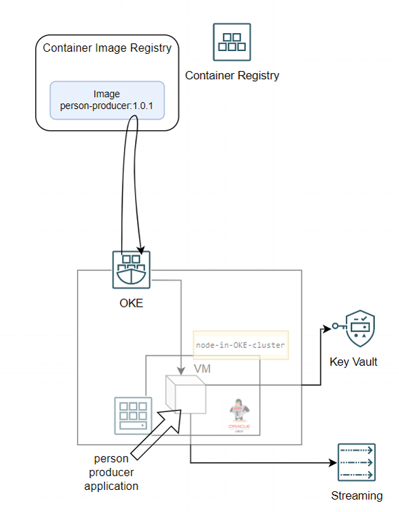
         </picture>

    <blockquote class="notice">
      <p><strong>NOTE:</strong> Logging may reveal problems with an application that has permissions for OCI resources. If the resource issue involves either retrieving the secret with stream details or producing messages to the stream itself, you may need to check if policy statements have been defined for the dynamic group <code class="language-plaintext highlighter-rouge">go-on-oci-instances</code> that allow all compute instances.</p>
    </blockquote>

    <p>At the compartment level, if the errors relate to the ability of the OKE cluster node (and by extension any application running in a container on this VM) to read secrets and work with streams, you’ll need to do the following:</p>

    <div class="language-console highlighter-rouge"><div class="highlight"><pre class="highlight"><code><span class="go"> allow dynamic-group go-on-oci-instances to read secret-family in compartment go-on-oci 

 allow dynamic-group go-on-oci-instances to manage streams in compartment go-on-oci
</span></code></pre></div>    </div>

    <picture class="aligncenter">
             <source srcset="assets/way-to-go-on-oci-article-5-policies-on-streams-secrets-for-dyngroup-instances.png 1x" />
             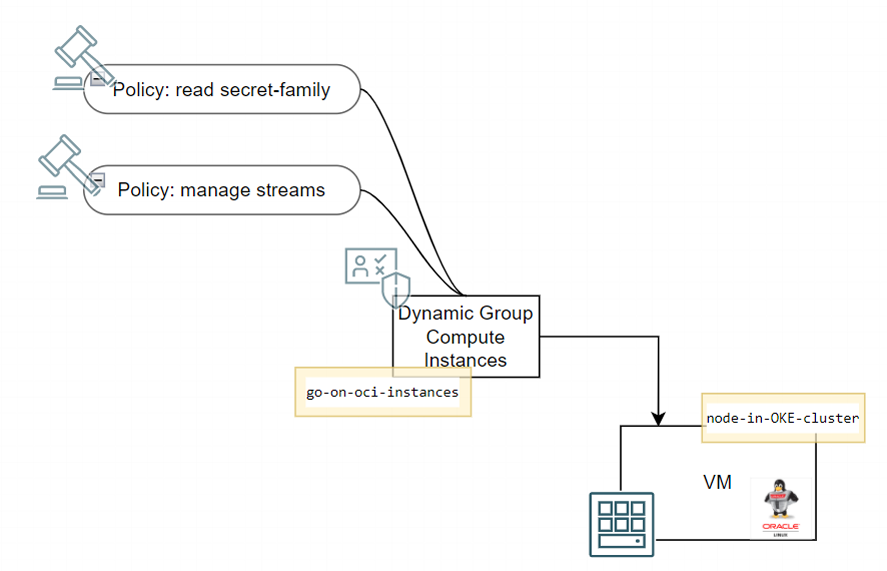
         </picture>
  </li>
</ol>

<h3 id="create-and-run-an-oci-devops-deployment-pipeline-to-publish-the-application-to-the-oke-cluster">Create and run an OCI DevOps Deployment Pipeline to publish the Application to the OKE cluster</h3>

<p>A <em>Deployment Pipeline</em> will take a Kubernetes manifest that manipulates K8S resources (e.g., creating a Pod or a Deployment) and apply it to a designated OKE cluster. The manifest contains a reference to a container image, most likely located in the OCI Container Image Registry (although it’s also possible for to be in a public or other private registry). The manifest can also contain value placeholders of the form, <code class="language-plaintext highlighter-rouge">${parameterName}</code>. If present, these are replaced by the actual values of the parameters when the pipeline is executed.</p>

<p>How would this work in practice? The pipeline can be used to deploy specific, varying versions of images and also to set values in the manifest that translate to environment variables inside the container. For example, the value for <em>STREAM_DETAILS_SECRET_OCID</em> is provided by a pipeline parameter. This value is replaced before the deployment starts in the manifest and that value is available as environment variable to be read by the <em>person-producer</em> application.</p>

<h4 id="create-an-inline-artifact-with-kubernetes-manifest-for-a-deployment">Create an Inline Artifact with Kubernetes Manifest for a Deployment</h4>

<ol>
  <li>Create an artifact in the DevOps Project,<code class="language-plaintext highlighter-rouge">person-producer-deployment-yaml</code>.
    <ul>
      <li>Type:  <em>Kubernetes manifest</em></li>
      <li><code class="language-plaintext highlighter-rouge">Artifact source</code>: <em>inline</em>.</li>
    </ul>
  </li>
  <li>
    <p>Paste in this Kubernetes manifest definition for creating a deployment based on a container image:</p>

    <div class="language-yaml highlighter-rouge"><div class="highlight"><pre class="highlight"><code> <span class="na">apiVersion</span><span class="pi">:</span> <span class="s">apps/v1</span>
 <span class="na">kind</span><span class="pi">:</span> <span class="s">Deployment</span>
 <span class="na">metadata</span><span class="pi">:</span>
   <span class="na">name</span><span class="pi">:</span> <span class="s">personproducer-deployment</span>
 <span class="na">spec</span><span class="pi">:</span>
   <span class="na">selector</span><span class="pi">:</span>
      <span class="na">matchLabels</span><span class="pi">:</span>
         <span class="na">app</span><span class="pi">:</span> <span class="s">personproducer</span>
   <span class="na">replicas</span><span class="pi">:</span> <span class="m">1</span>
   <span class="na">template</span><span class="pi">:</span>
      <span class="na">metadata</span><span class="pi">:</span>
         <span class="na">labels</span><span class="pi">:</span>
           <span class="na">app</span><span class="pi">:</span> <span class="s">personproducer</span>
      <span class="na">spec</span><span class="pi">:</span>
         <span class="na">containers</span><span class="pi">:</span>
         <span class="pi">-</span> <span class="na">name</span><span class="pi">:</span> <span class="s">personproducer</span>
      <span class="c1"># enter the path to your image, be sure to include the correct region prefix    </span>
           <span class="na">image</span><span class="pi">:</span> <span class="s">iad.ocir.io/idtwlqf2hanz/go-on-oci/person-producer:${imageVersion}</span>
           <span class="na">env</span><span class="pi">:</span>
           <span class="pi">-</span> <span class="na">name</span><span class="pi">:</span> <span class="s">STREAM_DETAILS_SECRET_OCID</span>
              <span class="s">value</span><span class="err">:</span> <span class="s">${STREAM_DETAILS_SECRET_OCID}</span>
         <span class="na">imagePullSecrets</span><span class="pi">:</span>
      <span class="c1"># enter the name of the secret you created  </span>
         <span class="pi">-</span> <span class="na">name</span><span class="pi">:</span> <span class="s">ocirsecret</span>

</code></pre></div>    </div>

    <ul>
      <li>
        <p><strong>NOTE:</strong> You have to replace part of the image name to make it fit your environment:</p>

        <p><code class="language-plaintext highlighter-rouge">iad.ocir.io/idtwlqf2hanz/go-on-oci/</code> =&gt; <code class="language-plaintext highlighter-rouge">&lt;region key&gt;/&lt;namespace&gt;/&lt;repository prefix&gt;</code></p>

        <picture class="aligncenter">
          <source srcset="assets/way-to-go-on-oci-article-5-define-artifact-k8s-deployment.png 1x" />
          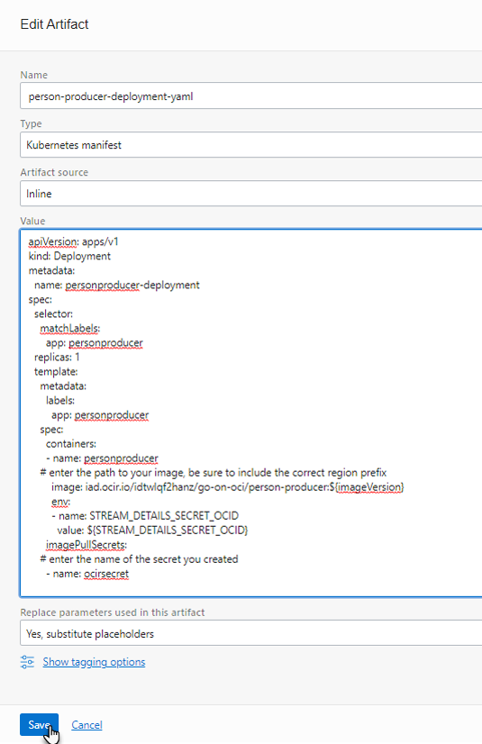
      </picture>
      </li>
      <li>
        <p>Also keep in mind that the manifest contains two placeholders: ${STREAM_DETAILS_SECRET_OCID} and ${imageVersion}. These are replaced when the artifact is used by values from parameters set at deployment time.</p>

        <p>Make sure to set the field <code class="language-plaintext highlighter-rouge">Replace parameters used in this artifact</code> to <em>Yes, substitute placeholders</em>.</p>
      </li>
    </ul>
  </li>
  <li>Select <strong>Save</strong>.</li>
</ol>

<h4 id="define-a-devops-environment-for-the-oke-cluster">Define a DevOps Environment for the OKE Cluster</h4>

<ol>
  <li>Define an environment in the DevOps Project:
    <ul>
      <li>Type: <em>Oracle Kubernetes Engine</em></li>
      <li>Name: <em>go-on-oci-oke</em></li>
    </ul>
  </li>
  <li>Select <strong>Next</strong>.</li>
  <li>Select the cluster instance that you just created and then select <strong>Create environment</strong>.</li>
</ol>

<picture class="aligncenter">
                <source srcset="assets/way-to-go-on-oci-article-5-create-environment-for-oke.png 1x" />
                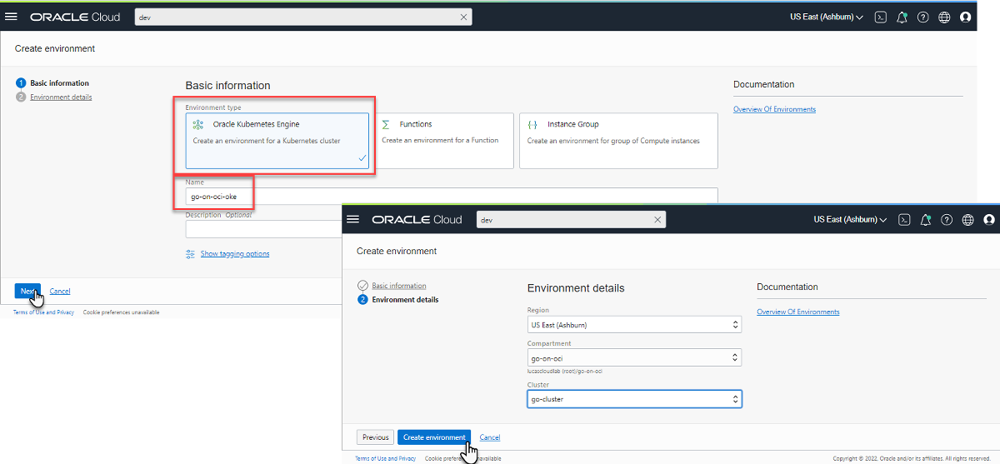
            </picture>

<h4 id="define-a-deployment-pipeline">Define a Deployment Pipeline</h4>

<ol>
  <li>Create a new Deployment Pipeline in the DevOps Project:
    <ol>
      <li>Give it a name: <em>deploy-person-producer-to-oke</em>.</li>
      <li>Add a stage of type <em>Apply manifest to your Kubernetes cluster</em>.</li>
      <li>Select <strong>Next</strong> to define details.</li>
      <li>Assign a name: <em>apply-person-producer-deployment</em></li>
      <li>Select the environment <em>go-on-oci-oke</em>.</li>
      <li>
        <p>Select artifact <em>person-producer-deployment-yaml</em> as an artifact to apply.</p>

        <p><strong>Note:</strong> Multiple <em>Kubernetes manifest</em> artifacts can be included in this stage.</p>
      </li>
      <li>
        <p>You can accept or change the Kubernetes namespace.
 Select <strong>Save</strong> to create the stage.</p>

        <picture class="aligncenter">
         <source srcset="assets/way-to-go-on-oci-article-5-define-deployment-pipeline-oke.png 1x" />
         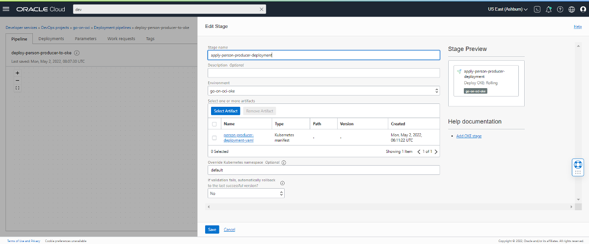
     </picture>
      </li>
    </ol>
  </li>
  <li>Define two Pipeline Parameters:
    <ul>
      <li><code class="language-plaintext highlighter-rouge">STREAM_DETAILS_SECRET_OCID</code> - Its default value should be the OCID of the secret that contains the Stream details (message endpoint and stream OCID).</li>
      <li><code class="language-plaintext highlighter-rouge">imageVersion</code> - Its default value can be <em>1.0.1</em>. This parameter determines the version of the container image <em>person-producer</em> to get from the image registry and deploy onto the OKE cluster.</li>
    </ul>

    <picture class="aligncenter">
             <source srcset="assets/way-to-go-on-oci-article-5-deployment-pipeline-parameters.png 1x" />
             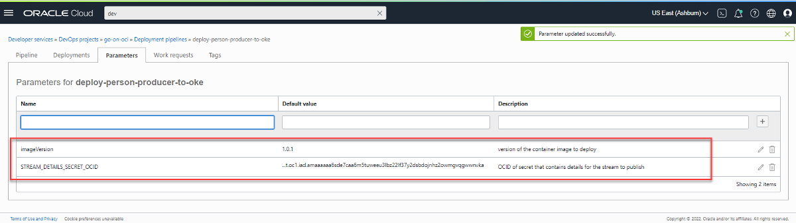
         </picture>
  </li>
</ol>

<h4 id="run-the-deployment-pipeline-to-deploy-person-producer-on-oke-cluster">Run the Deployment Pipeline to Deploy Person-Producer on OKE Cluster</h4>

<p>Finally, the pipeline is ready to run! You can kick it off and have the Deployment created on Kubernetes. If you wish, you can provide overrides for the parameters, but more than likely, these aren’t needed.</p>

<p>As you might imagine, running the pipeline is a little more impressive if you first removed the Pod and Deployment for person-producer from the OKE cluster. It should automatically be built by the pipeline, so if it makes a reappearance, you know it was the pipeline that did it.</p>

<picture class="aligncenter">
                <source srcset="assets/way-to-go-on-oci-article-5-run-deployment-pipeline1.png 1x" />
                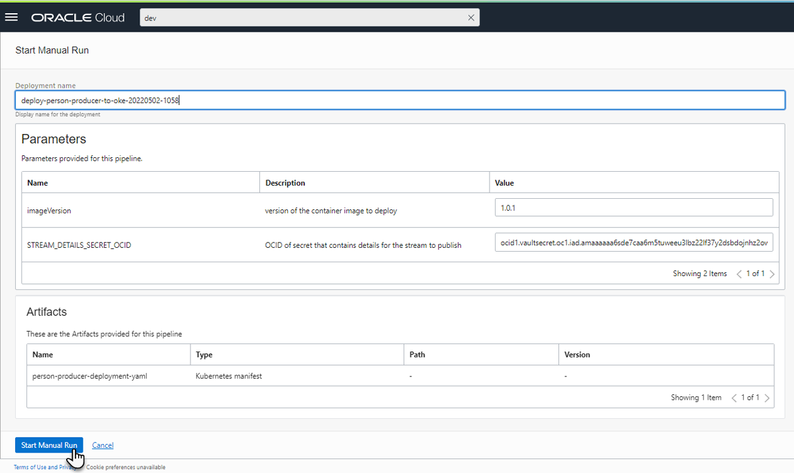
            </picture>

<p>The output from running the pipeline is definitely reassuring, green checkmarks all the way:</p>

<picture class="aligncenter">
                <source srcset="assets/way-to-go-on-oci-article-5-running-deployment-pipeline-output.png 1x" />
                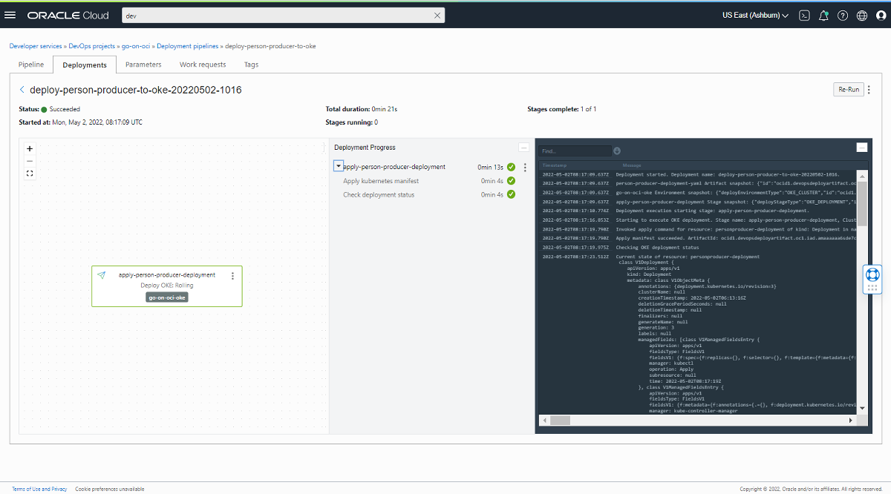
            </picture>

<p><strong>Check status:</strong></p>

<p>At this point, there are a lot of different ways you can inspect the health of the system. You can:</p>

<ul>
  <li>check on the Stream to find new messages being published,</li>
  <li>check in the Kubernetes Dashboard on the state of the Deployment and the Pod, <em>or</em></li>
  <li>check in <code class="language-plaintext highlighter-rouge">kubectl</code> with <code class="language-plaintext highlighter-rouge">kubectl get pods</code> to find a very recently kicked-off Pod for <code class="language-plaintext highlighter-rouge">personproducer-deployment</code>.</li>
</ul>

<picture class="aligncenter">
                <source srcset="assets/way-to-go-on-oci-article-5-overview-personproducer-deployment-pipeline.png 1x" />
                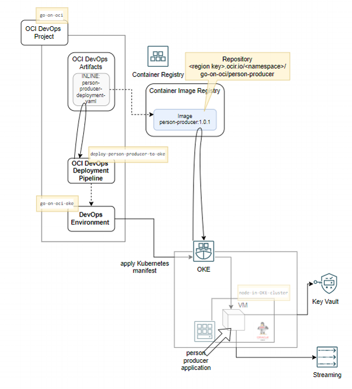
            </picture>

<h3 id="create-an-oci-devops-build-pipeline">Create an OCI DevOps Build Pipeline</h3>

<p>As a final step, we’ll create a new DevOps Build Pipeline that has more of a real-world application. This pipeline will build the Container Image for the <code class="language-plaintext highlighter-rouge">person-producer</code> application from the Go sources in the code repository, publish the container image to the registry, and then trigger the deployment pipeline. This means that whenever we commit a code change, we can run a pipeline that takes care of the end-to-end redeployment on the Kubernetes cluster for the changed application code.</p>

<p>The are quite a few steps, but they’s are all fairly straightforward:</p>

<ol>
  <li>Create a DevOps artifact for the container image, <code class="language-plaintext highlighter-rouge">person-producer</code>.</li>
  <li>Create the build pipeline.</li>
  <li>Add the parameter <code class="language-plaintext highlighter-rouge">imageVersion*</code> - this determines the version for the container image to produce.</li>
  <li>Add a managed build stage - this builds and tags the container image locally (on the build server).</li>
  <li>Add a stage to publish the freshly built image to the container image registry.</li>
  <li>Add a final stage to trigger the deployment pipeline,  <em>deploy-person-producer-to-oke</em>.</li>
</ol>

<p>Now, let’s test it out! Make a change to the application source code and commit the change to the code repository to trigger the build pipeline. This might take a few minutes, but afterwards, inspect the Stream for messages that carry the change made in the source code of the application.</p>

<h4 id="define-devops-artifact">Define DevOps Artifact</h4>

<ol>
  <li>Add a new artifact in the DevOps project:
    <ul>
      <li>Name: <code class="language-plaintext highlighter-rouge">PersonProducerImage</code></li>
      <li>Type: <code class="language-plaintext highlighter-rouge">Docker image</code></li>
      <li>Artifact repository path: <code class="language-plaintext highlighter-rouge">iad.ocir.io/idtwlqf2hanz/go-on-oci/person-producer:${imageVersion}</code></li>
    </ul>
  </li>
  <li>Replace the <em>region key</em>, <em>namespace</em>, and <em>repository prefix</em> with values that conform to your environment.</li>
  <li>Set <code class="language-plaintext highlighter-rouge">Replace parameters used in this artifact</code> to <em>Yes, substitute placeholders</em>.</li>
</ol>

<picture class="aligncenter">
                <source srcset="assets/way-to-go-on-oci-article-5-define-devopsartifact-for-containerimage.png 1x" />
                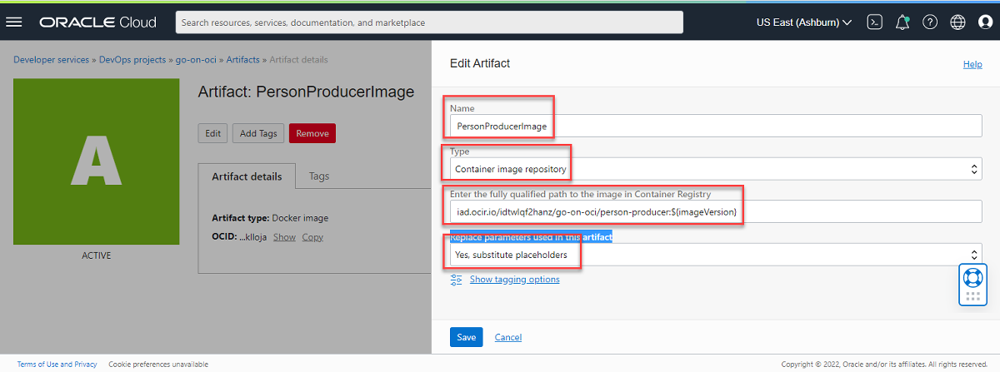
            </picture>

<h4 id="create-build-pipeline-and-add-parameter-imageversion">Create Build Pipeline and Add Parameter <code class="language-plaintext highlighter-rouge">imageVersion</code></h4>

<ol>
  <li>Create a new Build Pipeline in the DevOps Project:
    <ul>
      <li>Any name will do, but a good example might be: <em>build-person-message-producer</em>.</li>
      <li>Optionally provide a description.</li>
    </ul>
  </li>
  <li>
    <p>Define a parameter for the build pipeline:</p>

    <p><code class="language-plaintext highlighter-rouge">imageVersion</code>: <em>1.0.5</em> (for this example)</p>

    <p>This parameter contains a string that defines the version label assigned to the container image produced by the build pipeline. The value of that parameter is also made available to the deployment pipeline to determine the container image to fetch from the container image registry and use in the Pod created on the OKE cluster instance.</p>
  </li>
</ol>

<picture class="aligncenter">
                <source srcset="assets/way-to-go-on-oci-article-5-define-buildpipeline-parameter.png 1x" />
                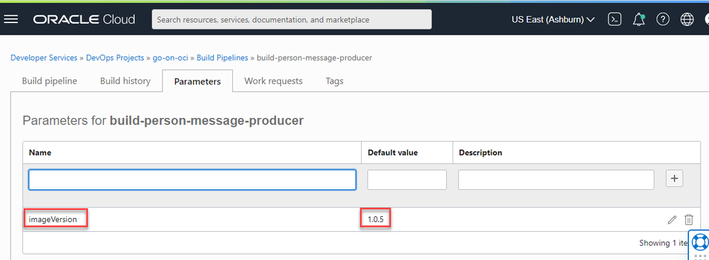
            </picture>

<h4 id="add-managed-build-stage---to-build-the-container-image">Add Managed Build Stage - to build the Container Image</h4>

<ol>
  <li>
    <p>Add a stage to the build pipeline.</p>

    <p>This stage has a lot to do. It will first gather the input sources from the source repository and build them into a linted, tested, vetted, and formatted Go application executable. From there, it will be converted into a lean container image.</p>

    <p>Name: <em>build-container-image-for-go-application</em>
 Type: <em>Managed Build</em>
 <code class="language-plaintext highlighter-rouge">build spec file path</code>: <code class="language-plaintext highlighter-rouge">/applications/person-message-producer/build_spec.yaml</code></p>

    <p>This refers to the file <code class="language-plaintext highlighter-rouge">build_spec.yaml</code> in the root of the application directory for application <em>person-message-producer</em>. This file contains the build steps required to take the Go sources, perform the automated build steps on them, and finally build a lightweight, stand-alone executable suitable for the Alpine Linux container image. The last step performs the <code class="language-plaintext highlighter-rouge">docker build</code> into a container image, with the local tag <code class="language-plaintext highlighter-rouge">fresh-person-producer-container-image</code>. The output from the stage of type <em>DOCKER_IMAGE</em> is labeled <code class="language-plaintext highlighter-rouge">person-producer-image</code> and references the <code class="language-plaintext highlighter-rouge">fresh-person-producer-container-image</code>. This output is used in the next stage that publishes the container image to the container image registry.</p>
  </li>
  <li>
    <p>Select the source code repository <code class="language-plaintext highlighter-rouge">go-on-oci-sources</code> and set the <em>Build source name</em> to <code class="language-plaintext highlighter-rouge">go-on-oci-sources</code>.</p>

    <picture class="aligncenter">
             <source srcset="assets/way-to-go-on-oci-article-5-add-managed-build-stage-for-container-image.png 1x" />
             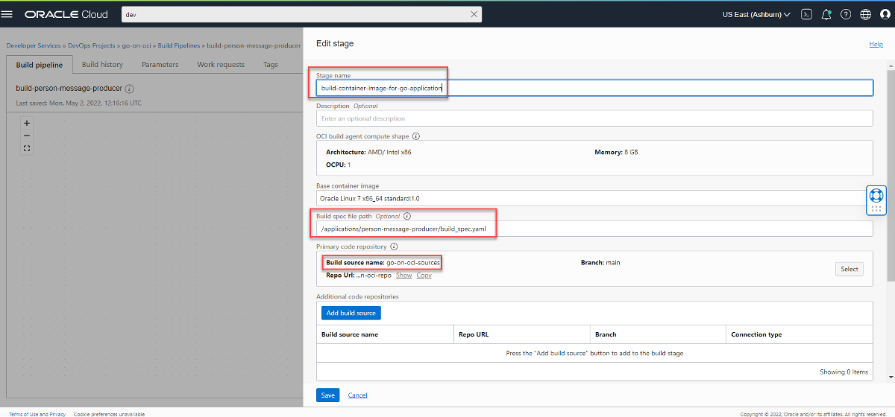
         </picture>
  </li>
  <li>
    <p>Select <strong>Save</strong> to complete the stage definition.</p>
  </li>
</ol>

<h4 id="add-a-stage-to-publish-the-freshly-built-image-to-the-container-image-registry">Add a Stage to Publish the freshly built image to the container image registry</h4>

<ol>
  <li>
    <p>Add a second stage in the build pipeline.</p>

    <p>This stage will take care of taking the output of the managed build stage and pushing the container image to the registry, with the right version tag based on the build pipeline’s parameter.</p>

    <ul>
      <li>Name: <em>push-container-image</em></li>
      <li>Type: <em>Deliver artifacts</em></li>
    </ul>
  </li>
  <li>Select the artifact to publish.
    <ul>
      <li><code class="language-plaintext highlighter-rouge">PersonProducerImage</code>: the <em>Docker image</em></li>
      <li>Path: <code class="language-plaintext highlighter-rouge">iad.ocir.io/idtwlqf2hanz/go-on-oci/person-producer:${imageVersion}</code>
This was defined as an artifact in the DevOps Project <a href="#define-devops-artifact">earlier</a>.</li>
    </ul>

    <picture class="aligncenter">
             <source srcset="assets/way-to-go-on-oci-article-5-create-stage-to-publish-image.png 1x" />
             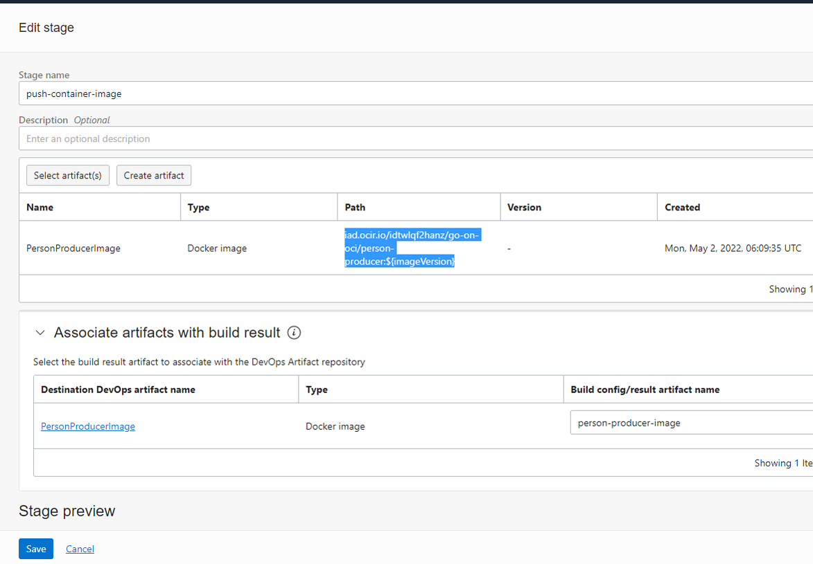
         </picture>
  </li>
  <li>Select <strong>Save</strong> to complete the stage definition.</li>
</ol>

<h4 id="add-a-stage-to-trigger-the-deployment-pipeline">Add a stage to Trigger the Deployment Pipeline</h4>

<ol>
  <li>Add a stage to the build pipeline.
    <ul>
      <li>Name: <em>trigger-person-producer-deployment-pipeline</em></li>
      <li>Type: <em>Trigger deployment</em></li>
      <li>Deployment pipeline to be triggered by this stage: <em>deploy-person-producer-to-oke</em>.</li>
    </ul>

    <picture class="aligncenter">
             <source srcset="assets/way-to-go-on-oci-article-5-create-pipeline-stage-to-trigger-deployment-pipeline.png 1x" />
             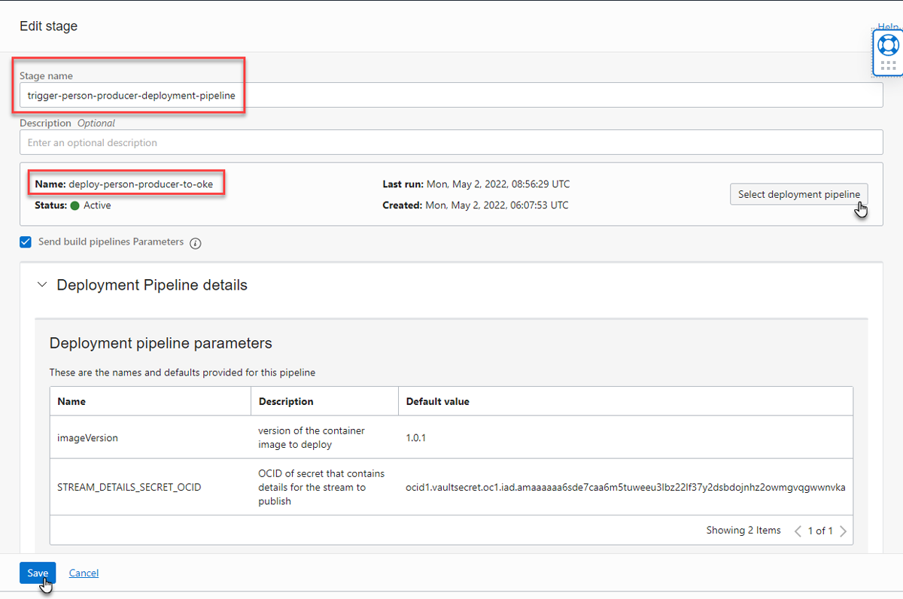
         </picture>
  </li>
  <li>
    <p>Select <strong>Save</strong> to complete the stage definition.</p>

    <picture class="aligncenter">
             <source srcset="assets/way-to-go-on-oci-article-5-buildpipeline-container-image.png 1x" />
             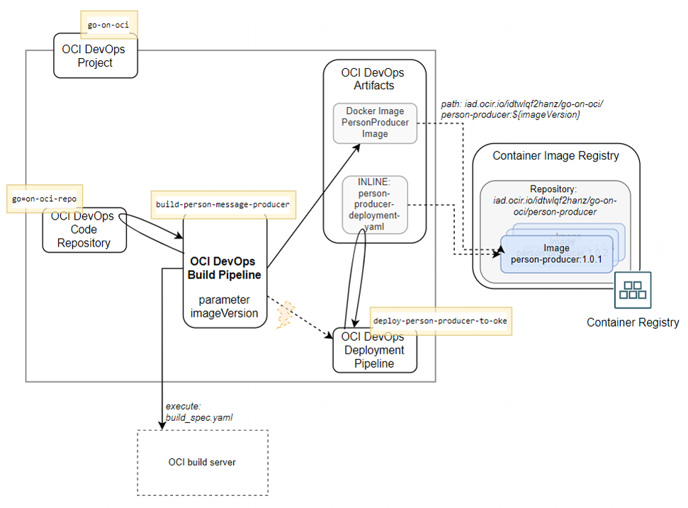
         </picture>
  </li>
</ol>

<h4 id="run-build-pipeline-create-container-image-and-run-deployment-pipeline">Run Build Pipeline, Create Container Image, and Run Deployment Pipeline</h4>

<p>We’re done! The Build Pipeline is complete. You can run it, set the value for parameter <em>imageVersion</em> and wait for the source code to be converted into a running Pod on OKE. In a typical workflow, you’ll make a change to the application source code and commit that change to the code repository to trigger the build pipeline. After a few minutes, when the two pipelines are done, the changed application will be running. For reference, the end-to-end flow (triggering the build pipeline to completion of the deployment on the OKE instance) for the example presented in this article should take around three minutes.</p>

<p>Some things to keep an eye out for during the execution of the build pipelie:</p>

<ul>
  <li>
    <p>Midway through, the console should look similar to:</p>

    <picture class="aligncenter">
              <source srcset="assets/way-to-go-on-oci-article-5-midway-build-pipeline.png 1x" />
              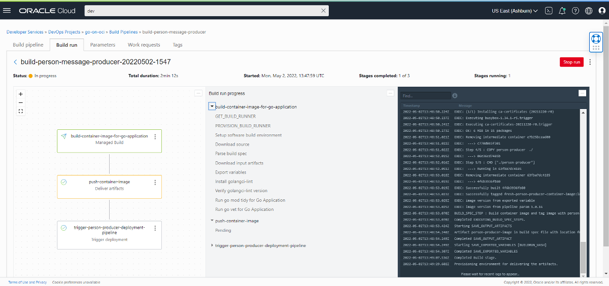
          </picture>
  </li>
  <li>
    <p>The output from the deployed application can be seen as the Pod logs in the Kubernetes Dashboard:</p>

    <picture class="aligncenter">
              <source srcset="assets/way-to-go-on-oci-article-5-pod-logs-in-dashboard.png 1x" />
              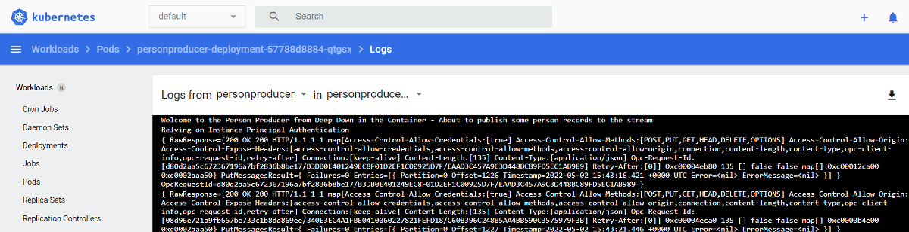
          </picture>
  </li>
  <li>
    <p>You can also check out the logs from the Pod using kubectl:</p>

    <div class="language-console highlighter-rouge"><div class="highlight"><pre class="highlight"><code><span class="go">  kubectl logs -l app=personproducer
</span></code></pre></div>    </div>
  </li>
</ul>

<h2 id="conclusion">Conclusion</h2>

<p>This article demonstrated how a Go application, through the Go SDK for OCI, can easily publish messages to OCI Streaming topics as well as consume such messages. This application is varsatile and can run either on OCI or outside of it. It’s credentials and other secrets are ideally managed using OCI Key Vault, something which the article also introduced and showed how it can be used from Go applications. Finally, a third type of application runtime platform was introduced, the managed OCI Kubernetes Engine (OKE). This application exists next to the VM and the serverless function. Once a Build Pipeline has created a container image for the application, OCI DevOps Deployment Pipelines can deploy our Go applications to OKE in an automated fashion.</p>

<p>The five articles that make up the series “Way to Go on OCI” have provided Go developers (<em>Gophers</em>) with a overview of how OCI provides a valuable platform both for engineering and running Go based applications as well as for leveraging relevant platform services from Go applications. The series demonstrates automated build and deployment of Go applications as stand alone executables on Compute Instances, as serverless functions and as containers on a Kubernetes cluster. Throughout the articles, introductions are given of these OCI services used from Go applications: Object Storage, Functions, API Gateway, Autonomous Database, Streaming and Key Vault. Additional, platform services used for engineering and operations were discussed, including DevOps Build and Deployment Pipelines, Code Repositories, Artifact Registry, Container Image Registry, IAM and Logging.</p>

<h2 id="resources">Resources</h2>

<p><a href="https://github.com/lucasjellema/go-on-oci-article-sources">Source code repository for the sources discussed in this article series</a></p>

<p><a href="https://blogs.oracle.com/cloud-infrastructure/post/automating-a-pod-identity-solution-with-oracle-container-engine-for-kubernetes-oke">Oracle Cloud Infrastructure Blog - Automating a pod identity solution with Oracle Container Engine for Kubernetes (OKE) - by Ed Shnekendorf</a> - this article describes the use of instance principals for the nodes (OCI Compute Instances) in the OKE cluster to provide permissions for the Pods running on the node to access OCI services</p>

<p><a href="https://blogs.oracle.com/developers/post/oracle-functions-connecting-to-an-atp-database-with-a-wallet-stored-as-secrets">Oracle Functions - Connecting To An ATP Database With A Wallet Stored As Secrets - article by Todd Sharp on retrieving Oracle Wallet from OCI Vault from Functions</a></p>

<p><a href="https://blogs.oracle.com/developers/post/protect-your-sensitive-data-with-secrets-in-the-oracle-cloud">Protect Your Sensitive Data With Secrets In The Oracle Cloud - article by Todd Sharp on use of OCI Vault</a></p>

<p><a href="https://medium.com/oracledevs/oci-streaming-create-producer-consumer-use-case-using-atp-oic-and-kafka-connect-e5be254edea3">OCI Streaming — create producer/consumer use case using ATP, OIC and Kafka connect</a></p>

<p><a href="https://technology.amis.nl/oracle-cloud/oracle-cloud-streaming-service-scalable-reliable-kafka-like-event-service-on-oci/">Oracle Cloud Streaming Service – Scalable, Reliable, Kafka-like Event service on OCI</a></p>

<p><a href="https://docs.oracle.com/en-us/iaas/Content/Streaming/Tasks/streaming-quickstart-oci-sdk-for-go.htm#go-sdk-streaming-quickstart">SDK for Go Streaming Quickstart</a></p>

<p><a href="https://technology.amis.nl/cloud/getting-started-again-with-kubernetes-on-oracle-cloud/">Getting started (again) with Kubernetes on Oracle Cloud</a></p>

<p><a href="https://medium.com/pragmatic-programmers/compiling-your-go-application-for-co-ntainers-b513190471aa">Compiling Your Go Application for Containers</a></p>


          <div class="sidebar sticky">
    <!-- <p><strong>Tags:</strong> <span class="tags">

            
            <a class="animated-link tag" href="/topics/open-source">open-source</a>
            <a class="animated-link tag" href="/topics/devops">devops</a>
            <a class="animated-link tag" href="/topics/get-started">get-started</a>
            <a class="animated-link tag" href="/topics/automation">automation</a>
            <a class="animated-link tag" href="/topics/iac">iac</a>
            </span>
    </p> -->
  


<div itemscope itemtype="https://schema.org/Person">

  

  <div class="author__content">
    
      <a href="https:/technology.amis.nl"><h3 class="author__name" itemprop="name">Lucas Jellema</h3></a>
    
    
      <div class="author__bio" itemprop="description">
        <p>developer, solution architect, blogger, Oracle Groundbreaker Ambassador, Oracle ACE Director</p>

      </div>
    
  </div>

  <div class="author__urls-wrapper">
    <ul class="author__urls social-icons">
      
        <li itemprop="homeLocation" itemscope itemtype="https://schema.org/Place">
          <i class="fas fa-fw fa-map-marker-alt" aria-hidden="true"></i> <span itemprop="name">The Netherlands</span>
        </li>
      

      

      

      
        <li>
          <a href="mailto:lucasjellema@gmail.com">
            <meta itemprop="email" content="lucasjellema@gmail.com" />
            <i class="fas fa-fw fa-envelope-square" aria-hidden="true"></i><span class="label">Email</span>
          </a>
        </li>
      

      

      
        <li>
          <a href="https://twitter.com/lucasjellema" itemprop="sameAs" rel="nofollow noopener noreferrer">
            <i class="fab fa-fw fa-twitter-square" aria-hidden="true"></i><span class="label">Twitter</span>
          </a>
        </li>
      

      

      
        <li>
          <a href="https://www.linkedin.com/in/lucasjellema" itemprop="sameAs" rel="nofollow noopener noreferrer">
            <i class="fab fa-fw fa-linkedin" aria-hidden="true"></i><span class="label">LinkedIn</span>
          </a>
        </li>
      

      

      

      

      

      
        <li>
          <a href="https://github.com/lucasjellema" itemprop="sameAs" rel="nofollow noopener noreferrer">
            <i class="fab fa-fw fa-github" aria-hidden="true"></i><span class="label">GitHub</span>
          </a>
        </li>
      

      

      

      

      

      

      

      

      

      

      

      

      

      

      
    </ul>
  </div>
</div>

  
  
  

  </div>


      </section>

      <footer class="page__meta">
        
        


        

  <p class="page__date"><strong><i class="fas fa-fw fa-calendar-alt" aria-hidden="true"></i> Updated:</strong> <time datetime="2022-05-26T11:00:00+00:00">May 26, 2022</time></p>


      </footer>
    </div>

  </article>
</div>

</div>

